![]()
# To reproduce the manuscript:
# 1. Download all the github repository (including data [.csv] and bibliography [.bib])
# 2. Requires Quarto (RStudio) + apa-quarto template (https://github.com/wjschne/apaquarto).
# To install apa-quarto template:
# quarto::quarto_use_template("wjschne/apaquarto")
# (Or in the terminal: quarto use template wjschne/apaquarto )
# 3. Requires the following packages to be installed
# (i.e. install.package("package_name"))
# 4. Click on render (optimized for .pdf format (via LateX)).
# Data import
library(readr)
library(readxl)
# Data wrangling:
library(tidyr)
library(dplyr)
# Render Formatting
# library(papaja)
library(RColorBrewer)
# library(kableExtra)
library(pakret) # R package in text citation
# Plots
library(ggplot2)
library(ggridges)
library(ggalluvial)
library(ggVennDiagram)
library(ggridges)
library(ggforce)
library(cowplot) # for multiplot in 1 figure
library(corrplot)
# geometry/geography feature package
library(sf)
# for ROC analyses:
library(pROC) # See https://www.r-bloggers.com/2019/02/some-r-packages-for-roc-curves/
# Make shure environment is empty
rm(list = ls())Pre-registered report: Mapping Synesthetic Sequences in Space: Improving Consistency Test by Harnessing Cartography Tools.
Abstract
Sequence-space synesthesia is a perceptual condition in which ordinal sequences (e.g., numbers, days of the week, or months of the year) are experienced as occupying specific spatial locations. This perceptual condition is identified using self-reports (e.g. questionnaires) and behavioural consistency tasks. Existing consistency tests measure the spatial distance between responses to repeated stimuli, but they ignore the ordinal and geometric features of spatial-forms. This preregistered study consists of a present and future analyses. In the present analyses, we optimise SSS diagnostics from consistency test by extracting novel geometric features at the spatial-form level. To do this, we first evaluate classification performances of old and new features in a large (N = 685) aggregated sample from four available and independent datasets. We then harness a geographic toolbox to extract metrics from the spatial-forms level. Finally, receiver operating characteristic (ROC) analyses are conducted to assess the discriminative performances of each method. The results show that permuted topological validity of spatial-forms and the perimeter between stimuli performs equally well in detecting SSS. In a future study, we will examine predictive validity of the selected methods on an independent dataset that has yet to be collected. Findings from the present study highlight the relevance of topological principles for sequence-space representations and aims to optimise the ability of consistency tests to detect SSS.
Keywords
Sequence space synaesthesia, Synaesthesia/synesthesia, consistency test, space, time, numbers
Introduction
Sequence-Space Synaesthesia (SSS) or visuo-spatial forms is the phenomenon where people visualize ordered sequences in particular spatial positions. For example, numbers, weekdays or months (synesthetic inducers) are represented as arranged into specific spatial positions in space (synesthetic concurrent). The synaesthetic spatial-forms can be complex and have variable geometric forms. Those geometric forms might be different for each categories (i.e. number-forms weekdays and months), with forms such as ellipses, zig-zags or curbed lines Flournoy (1893). SSS are usually identified using questionnaires and consistency tests. An individual is identified as SSS based on the variability at the stimulus level between repeated responses: less variable responses being an indicator of the consistent response characteristic of SSS. However, stimulus level consistency can also be achieved by responding to the same position for all stimuli. Furthermore, it might favour linear over circular spatial-forms and is not informed about the ordinality between stimuli (e.g. 1 → 2 → 3, etc.). Here, we aim at optimizing the identification of SSS from consistency tasks using geometrical characteristics of spatial-forms from ordered stimuli or inducers.
SSS frequently co-occurs with other subtypes of synaesthesia and as for other subtypes of synaesthesia it’s idiosyncratic. Colour-grapheme synaesthesia, where a grapheme inducer triggers a concurrent colour (i.e. “A” seen as red), co-occurs at 71 % to 76 % with SSS (Sagiv et al. 2006). Nevertheless, across different synaesthetic subtypes, self-reported SSS tend to cluster together (Ward and Simner 2022), indicating a degree of internal homogeneity and justifying to study it as a distinct phenomenon. Spatial-forms are idiosyncratic, which results in considerable heterogeneity in how this phenomenon is manifested across individuals. One source of heterogeneity is given by dimensionality: some SSS experiences can involve three-dimensional (3D) and two-dimensional (2D) arrangements (Eagleman 2009; Price and Pearson 2013). Another source of heterogeneity is the reference frame, for example, the spatial-forms might take place in an external space around the body (i.e. projector) or in an egocentric internal space (i.e. associator) (Dixon, Smilek, and Merikle 2004; Smilek et al. 2007). Further variability can be explained by temporal-spatial properties and mental-manipulation of spatial-forms such as “zooming” in and out or rotating or shifting perspectives at will (Gould et al. 2014; Jarick et al. 2009) Lastly, the shape, complexity and layout of the spatial-forms are also heterogeneous such as forming for example ovals, lines, zig-zags or loops. With some recurring shapes being more frequent across SSS, such as ovals for months (Eagleman 2009).
Despite the after mentioned heterogeneities, SSS is also phenomenological characterized. There might be five main characteristics for synaesthesia in general and specifically SSS (Seron et al. 1992; Deroy and Spence 2013). Automaticity: the inducer automatically triggers the concurrent. Unidirectionality: while the inducer triggers the concurrent, the concurrent does not trigger the inducer. Developmentally: the experience was already present during childhood. Consciousness: The concurrent is consciously perceived. Consistency: the inducer-concurrent pair remains stable in time within subject. While some of these characteristics can be captured with self-reported questionnaire (i.e. for development and consciousness), other can be quantified more objectively using behavioural tasks such as consistency tests (Baron-Cohen et al. 1993).
Consistency tests
Consistency tests are extracted form behavioural tasks used to evaluate how stable synesthetic experiences are over time (Rothen et al. 2013, 2016). They do this by presenting the same stimuli repeatedly and assessing how similar participant’s responses are across repetitions (i.e. inducer-concurrent associations). High consistency is often taken as evidence for synaesthesia. Consistency tests have proven effective for colour-grapheme synaesthesia. Measures of individual consistency can be derived using colour pickers while repeatedly presenting the same inducer (i.e. “A”). The quantification of the distance between concurrents from the same inducers is used to discriminate consistent synaesthetes from controls. Specifically, the euclidean distance in CIE L*u*v colour space, which is designed for perceptual uniformity, yields optimal classification accuracy when using a cut-off estimated as deduced from a larger representative sample (Rothen et al. 2013). A similar rationale to that used for colour-grapheme synaesthesia has been applied to characterize SSS from consistency tasks.
In the SSS consistency task, participants complete multiple rounds of the same stimuli (e.g., digits, days of the week, and months of the year) and are asked to indicate a spatial location for each stimulus by clicking on the computer screen. Brang et al. (2010) for example evaluated consistency as the distance between repeated responses to the same inducer or stimuli (e.g. January and January) relative to adjacent stimuli (e.g. February). A response was defined as consistent if it fell within 1.96 z-scores. However, this criterion was noted to be potentially too conservatory, as it identified synaesthesia in 4 of 81 self-reported synaesthetes. Geometrical features such as area and perimeter between the coordinates of repeated inducers have further been used as a measure of the distance between same inducers, hence as a metric for consistency. Less consistent responses leading to smaller triangle perimeters and area (Rothen et al. 2016). A cut-off corresponding to less than 0.203 % average responses area in proportion to the total screen area to classify as SSS has been suggested (see also Ward et al. 2018).
However, several general caveats of consistency tests using concurrent or stimulus level metrics have been identified. Some tests may favour certain spatial-forms (Ward et al. 2018) in particular those with linear or highly regular spatial layouts, i.e. elliptical patterns for months(Flournoy 1893; Eagleman 2009; Brang et al. 2010). Another concern is that participants that respond with the same position, for example when not knowing the response, will have artificially high consistencies with those metrics (Rothen et al. 2016). This has led to alternative approaches such as to add the standard deviation of responses, questionnaire cut-off (Ward et al. 2018) or permutation-based comparison of individual responses to chance levels for colour-grapheme (Root et al. 2021) and SSS (Ward 2022). Finally, these consistency tests evaluate the variability of responses to the same stimuli, therefore the ordinality between stimuli is not taken into account. Synaesthetic spatial-forms follow ordinal rules (e.g. Monday → Tuesday → Wednesday). In the domain of numerical cognition, ordinality has been identified as an important information when processing sequences (Lyons and Beilock 2013). Some studies of SSS have systematically investigated ordinality by investigating metrics of adjacent inducer-concurrent pairs such as distances (Brang et al. 2010) or angles (Eagleman 2009). However, ordinality of the concurrent spatial-form might be particularly relevant considering all the stimuli of a certain category (i.e. weekdays or months). The spatial-forms of the concurrents are often spatially structured into configuration such as lines or polygons that may follow distinctive geometrical rules. For example linear layouts have been described in early accounts of number forms (Flournoy 1893; Galton 1880).
Present study
The goal of this registered report is to compare different consistency tests on their classification performances of individuals with SSS and controls doing the consistency task using Receiver Operator Characteristics (ROC) analyses. In the present Phase I, we merge four previously available datasets using the same task on both SSS and control groups (Ward 2022). First, we aimed to reproduce established consistency test methods based on stimulus-level consistency metrics, such as area and perimeter. Second, we explored a new approach comparing geometrical features across repetitions of the same categories (weekday, month and numbers), such as segments and polygons. These novel tests are designed to take advantage of the sequentiality or ordinality between the responses and the geometrical properties at the spatial-form level, see Figure 2. All the consistency tests are then compared using ROC analyses on their correct classification performances of self-reported SSS and control groups.
In a future study, we will assess whether the tests identified in the present study generalize and are validated on an independent dataset that is yet to be acquired (Sachdeva et al. (2024), Stage 1 in-principle acceptance, see also https://osf.io/6wn4m).
# In the following I upload and merge the data from Ward, Rothen and Van Peters. Data is stored into a full dataset ds (i.e. 1 row per trial) and a dataset per participant ds_Quest (i.e. 1 row per participant).
### Ward Data
ds_syn <- read_excel("Data/raw_synaesthetes_consistency_anon.xlsx")
ds_syn$group <- "Syn"
ds_ctl <- read_excel("Data/raw_controls_consistency_anon.xlsx")
ds_ctl$group <- "Ctl"
ds_Q_syn <- read_excel("Data/raw_synaesthetes_questionnaire_anon.xlsx")
ds_Q_syn$group <- "Syn"
ds_Q_ctl <- read_excel("Data/raw_controls_questionnaire_anon.xlsx")
ds_Q_ctl$group <- "Ctl"
# Merge wards datafiles:
ds <- merge(ds_syn,ds_ctl, all = TRUE)
ds_Q <- merge(ds_Q_syn,ds_Q_ctl, all = TRUE)
# Ward only uses those who completed the Questionnaire (i.e. N = 215+252 = 467)
ds <- ds %>%
filter(session_id %in% unique(ds_Q$session_id))
### Rothen Data
ds_Rothen <- read.csv("Data/rawdata.txt", sep="")
### Rename variables to match datasets
# sum(ds_Q$consistency_score != ds_Q$consistency) # Duplicate variable
ds_Q$consistency <- NULL
ds_Q$...36 <- NULL
ds_Q$...37 <- NULL
ds_Q$mean_simulation_Z <- NULL
ds_Q$SD_simulation <- NULL
ds_Q$`z-score` <- NULL
rm(ds_syn,ds_ctl,ds_Q_syn,ds_Q_ctl)
ds$ID <- ds$session_id
ds_Q$ID <- ds_Q$session_id
ds_Q$dataSource <- "Ward"
ds$dataSource <- "Ward"
# From Rothen:
names(ds_Rothen)[names(ds_Rothen) == "Group"] <- "group"
ds_Rothen$group <- as.factor(ds_Rothen$group)
levels(ds_Rothen$group) <- c("Ctl","Syn")
names(ds_Rothen)[names(ds_Rothen) == "Inducer"] <- "stimulus"
names(ds_Rothen)[names(ds_Rothen) == "X"] <- "x"
names(ds_Rothen)[names(ds_Rothen) == "Y"] <- "y"
ds_Rothen$SynQuest <- ds_Rothen$group == "Syn"
ds_Rothen$dataSource <- "Rothen"
# From the paper (all the same since lab based):
ds_Rothen$width <- 1024
ds_Rothen$height <- 768## 0.2 Merge data:
# remove non matching colnames:
ColNames_ds <- colnames(ds_Rothen)[colnames(ds_Rothen) %in% colnames(ds)]
ds <- ds %>%
select(all_of(ColNames_ds))
ds_Rothen <- ds_Rothen %>%
select(all_of(ColNames_ds))
# Merge Data:
ds <- merge(ds,ds_Rothen, all = TRUE)
# Because there is no questionnaire in Nicola's data:
ds$SynQuest[ds$dataSource == "Rothen"] = "NaN"
# Questionnaire:
ID <- unique((ds_Rothen$ID))
ds_Q_Rothen <- as.data.frame(ID)
ds_Q_Rothen$dataSource <- "Rothen"
ds_Q_Rothen <- merge(ds_Q_Rothen, ds_Rothen %>% group_by(ID) %>% select(ID, dataSource, group) %>% filter(row_number() == 1), by = c("ID","dataSource"))
# Append rows:
ds_Q$ID <- as.character(ds_Q$ID)
ds_Q <- bind_rows(ds_Q,ds_Q_Rothen)
# Clear up:
rm(ds_Q_Rothen, ds_Rothen)
## 0.3 Wrangle dataset
# Add Condition, i.e. stim type:
ds$Cond <- NaN
ds$Cond[ds$stimulus %in% c("1","2","3","4","5","6","7","8","9","0")] <- "number"
ds$Cond[ds$stimulus %in% c("Monday","Tuesday","Wednesday","Thursday","Friday","Saturday","Sunday")] <- "weekday"
ds$Cond[ds$stimulus %in% c("January", "February", "March", "April", "May","June","July","August","September","October","November","December")] <- "month"### ADD Van Petersen Cortex data
filedir <- "Data/vanPeterPerID/"
fn <- paste0(filedir,dir(filedir))
ds_PeterCor <- read_excel(fn[1],
col_types = c("text", "numeric", "text",
"text", "numeric", "numeric", "numeric",
"numeric", "numeric", "numeric",
"numeric", "numeric", "text", "text",
"text", "numeric", "numeric", "numeric"))
for(i in 2:length(fn)){
ds_i <- read_excel(fn[i],
col_types = c("text", "numeric", "text",
"text", "numeric", "numeric", "numeric",
"numeric", "numeric", "numeric",
"numeric", "numeric", "text", "text",
"text", "numeric", "numeric", "numeric"))
ds_PeterCor <- merge(ds_PeterCor, ds_i, all = TRUE)
}
# Here information about group:
ds_PeterCor_Q <- read_excel("Data/Consistency_scores.xlsx")
names(ds_PeterCor_Q)[names(ds_PeterCor_Q) == "PPcode"] <- "ID"
names(ds_PeterCor)[names(ds_PeterCor) == "Code"] <- "ID"
ID_IN <- intersect(ds_PeterCor$ID, ds_PeterCor_Q$ID)
ds_PeterCor <- ds_PeterCor %>%
filter(ID %in% ID_IN)
ds_PeterCor_Q <- ds_PeterCor_Q %>%
filter(ID %in% ID_IN)
# Merge data with group and all dataset:
ds_PeterCor <- ds_PeterCor_Q %>%
left_join(ds_PeterCor, by = "ID")
# Rename to match:
names(ds_PeterCor)[names(ds_PeterCor) == "Group"] <- "group"
ds_PeterCor[ds_PeterCor$group == "SSS",]$group <- "Syn"
ds_PeterCor[ds_PeterCor$group == "control",]$group <- "Ctl"
names(ds_PeterCor)[names(ds_PeterCor) == "MouseClick.RESPCursorY"] <- "y"
names(ds_PeterCor)[names(ds_PeterCor) == "MouseClick.RESPCursorX"] <- "x"
names(ds_PeterCor)[names(ds_PeterCor) == "word"] <- "stimulus" # Will need to translate to english!
names(ds_PeterCor)[names(ds_PeterCor) == "BlockList.Cycle"] <- "repetition"
ds_PeterCor$width <- 1920 # "screen with display resolution set to 1920 x 1080, controlled by a Dell computer running Windows 7."
ds_PeterCor$height <- 1080
ds_PeterCor$dataSource <- "PeterCor"
ds_PeterCor <- ds_PeterCor %>%
select(all_of(ColNames_ds))
# Translate, weekdays:
ds_PeterCor$stimulus[ds_PeterCor$stimulus == "maandag"] <- "Monday"
ds_PeterCor$stimulus[ds_PeterCor$stimulus == "dinsdag"] <- "Tuesday"
ds_PeterCor$stimulus[ds_PeterCor$stimulus == "woensdag"] <- "Wednesday"
ds_PeterCor$stimulus[ds_PeterCor$stimulus == "donderdag"] <- "Thursday"
ds_PeterCor$stimulus[ds_PeterCor$stimulus == "vrijdag"] <- "Friday"
ds_PeterCor$stimulus[ds_PeterCor$stimulus == "zaterdag"] <- "Saturday"
ds_PeterCor$stimulus[ds_PeterCor$stimulus == "zondag"] <- "Sunday"
# Translate, Monthc:
ds_PeterCor$stimulus[ds_PeterCor$stimulus == "januari"] <- "January"
ds_PeterCor$stimulus[ds_PeterCor$stimulus == "februari"] <- "February"
ds_PeterCor$stimulus[ds_PeterCor$stimulus == "maart"] <- "March"
ds_PeterCor$stimulus[ds_PeterCor$stimulus == "april"] <- "April"
ds_PeterCor$stimulus[ds_PeterCor$stimulus == "mei"] <- "May"
ds_PeterCor$stimulus[ds_PeterCor$stimulus == "juni"] <- "June"
ds_PeterCor$stimulus[ds_PeterCor$stimulus == "juli"] <- "July"
ds_PeterCor$stimulus[ds_PeterCor$stimulus == "augustus"] <- "August"
ds_PeterCor$stimulus[ds_PeterCor$stimulus == "september"] <- "September"
ds_PeterCor$stimulus[ds_PeterCor$stimulus == "oktober"] <- "October"
ds_PeterCor$stimulus[ds_PeterCor$stimulus == "november"] <- "November"
ds_PeterCor$stimulus[ds_PeterCor$stimulus == "december"] <- "December"
# They added 2 numbers that are not in the other datasets:
ds_PeterCor <- ds_PeterCor %>%
filter(stimulus != "50") %>%
filter(stimulus != "100")
# MERGE
ds <- merge(ds,ds_PeterCor, all = TRUE)
# Questionnaire:
names(ds_PeterCor_Q)[names(ds_PeterCor_Q) == "Group"] <- "group"
ds_PeterCor_Q[ds_PeterCor_Q$group == "SSS",]$group <- "Syn"
ds_PeterCor_Q[ds_PeterCor_Q$group == "control",]$group <- "Ctl"
ds_PeterCor_Q$dataSource <- "PeterCor"
ds_PeterCor_Q <- ds_PeterCor_Q %>%
select(ID, group, `Consistency All`, `Consistency Days`, `Consistency Months`,`Consistency Numbers`, dataSource)
# Append rows:
ds_Q <- bind_rows(ds_Q,ds_PeterCor_Q)
# Tidy workspace:
rm(ds_PeterCor_Q,ds_PeterCor,ds_i, ID, fn,ColNames_ds,i,ID_IN)# This data was provided by Jamie by mail. The data is prepared in a separeate file
# Preserve "?" in the colnames:
ds_Ward2 <- read.csv2("Data/WardData2.csv", fileEncoding = "UTF-8", check.names = FALSE)
ds_Ward2$ID <- ds_Ward2$session_id
ds_Ward2$dataSource <- "Ward2"
# Add Cond
ds_Ward2$Cond <- NaN
ds_Ward2$Cond[ds_Ward2$stimulus %in% c("1","2","3","4","5","6","7","8","9","0")] <- "number"
ds_Ward2$Cond[ds_Ward2$stimulus %in% c("Monday","Tuesday","Wednesday","Thursday","Friday","Saturday","Sunday")] <- "weekday"
ds_Ward2$Cond[ds_Ward2$stimulus %in% c("January", "February", "March", "April", "May","June","July","August","September","October","November","December")] <- "month"
# Now I somehow need to define the groups
# If a response in the questionnaire then syn, if not then control.
ds_Ward2$group <- NaN
ds_Ward2$group[is.na(ds_Ward2$`Q1 . Some people routinely think about sequences as arranged in a particular spatial configuration (as in the examples below), do you think this might apply to you? (1=strongly agree, 5= strongly disagree)`)] <- "Ctl"
ds_Ward2$group[!is.na(ds_Ward2$`Q1 . Some people routinely think about sequences as arranged in a particular spatial configuration (as in the examples below), do you think this might apply to you? (1=strongly agree, 5= strongly disagree)`)] <- "Syn"
colNWard2 <- colnames(ds_Ward2)
ds_Ward2_Q <- ds_Ward2 %>%
select(c(ID, dataSource, colNWard2[colNWard2 %in% colnames(ds_Q)])) %>%
group_by(ID) %>%
filter(row_number() == 1)
ds_Ward2_Q <- as.data.frame(ds_Ward2_Q)
ds_Ward2_Q$`questionnaire score` <- ds_Ward2_Q[,4] +
rowSums(ds_Ward2_Q[,21:24]) +
rowSums(6 - ds_Ward2_Q[,25:28])
## Merge
ds <- merge(ds,ds_Ward2, all = TRUE)
ds_Q <- merge(ds_Q,ds_Ward2_Q,all = TRUE)
rm(ds_Ward2,ds_Ward2_Q)# Now we can enrich our dataset and process several checks
# Add Condition, i.e. stim type:
ds$Cond <- NaN
ds$Cond[ds$stimulus %in% c("1","2","3","4","5","6","7","8","9","0")] <- "number"
ds$Cond[ds$stimulus %in% c("Monday","Tuesday","Wednesday","Thursday","Friday","Saturday","Sunday")] <- "weekday"
ds$Cond[ds$stimulus %in% c("January", "February", "March", "April", "May","June","July","August","September","October","November","December")] <- "month"
# Add stimulus repetition number
ds <- ds %>%
group_by(ID, stimulus) %>%
arrange(ID, stimulus, .by_group = TRUE) %>%
mutate(repetition = row_number()) %>%
ungroup()
# few trials that have more than 3 repetitions somehow:
ds <- ds %>% filter(repetition <= 3)
# Factorialize group variable to avoid confusions:
ds$group <- as.factor(ds$group)
ds_Q$group <- as.factor(ds_Q$group)# This is potentially a critical part for the results. Need to decide:
# (1) how to treat same coordinate responses, i.e. when ID clicks on the same position (see also Rothen and Ward)
# (2) how to treat missing data (i.e. NA & NaN)
# For (1), since z-score might fail (i.e. if all same coordinates) --> turn same coordinates to NaN
# For (2), since sf does not accept missing data --> we exclude those responses.
# This leads to some stimuli having only 2 repetitions (i.e. ID %in% 4_JB) AND some ID having to few pairs.
# Since polygons need at least 4 coordinate pairs. --> check enough data per repetition
# Important. To reproduce Rothen, the X = -1 and Y = -1 need to be interpreted as missing data (NaN):
ds$x[ds$x == -1] <- NaN
ds$y[ds$y == -1] <- NaN
# Detect ID has the same coordinates across Conditions:
ds <- ds %>%
group_by(ID, Cond) %>%
mutate(SameCoord_x = length(unique(x[!is.na(x)])) == 1,SameCoord_y = length(unique(y[!is.na(y)])) == 1)
# NaNification:
ds$x[ds$SameCoord_x] <- NaN
ds$y[ds$SameCoord_y] <- NaN
ds$x[is.na(ds$x)] <- NaN # In VanPeters, some NA data all as NaN
ds$y[is.na(ds$y)] <- NaN
N1 <- length(unique(ds$ID)) # Track if ID loss
# Remove NaN from the dataset:
All_n <- length(ds$x) # Track trial loss
ds <- ds %>%
filter(!is.na(x))
ds <- ds %>%
filter(!is.na(y))
All_n2 <- length(ds$x)
N2 <- length(unique(ds$ID)) # Track if ID loss
# Check that each stimulus has 3 repetitions (3+2+1 = 6).
ds <- ds %>%
ungroup() %>%
group_by(ID, stimulus) %>%
mutate(SumRep = sum(repetition)== 6)
ds <- ds[ds$SumRep,]
All_n3<- length(ds$x)
# Counts how many full conditions each ID has (should be 3):
tmp2 <- ds %>%
ungroup() %>%
group_by(ID, Cond, repetition) %>%
filter(row_number() == 1) %>%
summarize(ntrials = length(x)) %>%
ungroup() %>%
group_by(ID) %>%
summarize(nCond = sum(ntrials)/3)
# Later on, we make polygons. These need at least 4 points. Hence we exclude ID's with less than 4 responses per condition:
tmp <- ds %>%
ungroup() %>%
group_by(ID, Cond, repetition) %>%
summarize(ntrials = length(x))
ds <- ds %>%
filter(!ID %in% tmp$ID[tmp$ntrials < 4])
N3 <- length(unique(ds$ID))
# Match ID to ds_Q:
IDlist <- unique(ds$ID)
ds_Q <- ds_Q %>%
filter(ID %in% IDlist)## Standardize/scale coordinates
ds <- ds %>%
group_by(ID) %>%
mutate(x_zs = scale(x)) %>%
mutate(y_zs = scale(y))# Manually adjust pixels of invalid screen size
# Note: 29 since 29 stimuli
ds$height[ds$ID == 29324] <- 1080
ds$width[ds$ID == 32190 ] <- 1440
# This ID has unexpected changing screen settings, consider exclusion:
ds$width[ds$ID == 33168 ] <- 308
ds$height[ds$ID == 33168 ] <- 149
ds$width[ds$ID == 35556 ] <- 1439
ds$height[ds$ID == 35556 ] <- 734
ds$width[ds$ID == 48114 ] <- 1593
ds$height[ds$ID == 48114 ] <- 671
ds$width[ds$ID == 59854] <- 1366
ds$height[ds$ID == 59854] <- 663
ds$width[ds$ID == 63127] <- 1920
ds$height[ds$ID == 63127] <- 880
ds$Screen_area <- ds$width*ds$heightMethods
Code and data for “one-click” reproducibility of this manuscript including the following analyses are available on git-hub (https://github.com/remLach/SpaceSequenceSynDiagnostic). All the analyses are conducted in R, using the following packages ‘pROC’ v. 1.19.0.1 (Robin et al. 2011), ‘sf’ v. 1.0.21 (Pebesma and Bivand 2023) and for visualization ‘ggplot2’ v. 4.0.1 (Wickham 2016), ‘ggVennDiagram’ v. 1.5.6 (Gao and Dusa 2025).
Datasets and Participants
To base the optimization of the consistency test on the largest possible sample we looked for accessible datasets that used the same consistency tasks on groups of synesthetes and controls. We found four datasets that met these criteria. Two datasets were collected in laboratory settings Rothen et al. (2016) (see also https://osf.io/6hq94) and Van Petersen et al. (2020) (see also https://data.ru.nl/collections/di/dcc/DSC_2018.00019_653). The two others came from on-line testing Ward (2022) (see alsohttps://osf.io/nu5v4) and an additional dataset was gently provided by private communications with Professor Ward. To match the other datasets, stimuli of the weekdays and months categories were translated from Dutch to English in the dataset from (Van Petersen et al. 2020). For the number category we included only digits from 0 to 9 that where presented across all datasets (i.e. excluding the stimuli “50” and “100” for numbers in Van Petersen et al. (2020)).
From the merged datasets, we kept 685 from the total 689 participants. First, we excluded 0.02 % empty trials (i.e. skipped responses) including trials flagged for having the same x or y coordinates across conditions and repetitions, causing the depletion n = 2 participants(as in Rothen et al. 2016; Ward et al. 2018). n = 2 participants were excluded for having less than 4 coordinate points since polygons need at least four coordinate. Note therefore, that 31 participants of the final sample did not have responses in all three conditions X repetition cases. From the final sample of N = 685, 396 were synaesthetes and 289 controls, see Table 1 and Table 2.
| Synaesthetes | N before | N after | Age |
|---|---|---|---|
| (Rothen et al. 2016) | 33 | 32 | 23.1 |
| (Van Petersen et al. 2020) | 23 | 22 | 23.2 |
| (Ward 2022) | 252 | 252 | 37.2 |
| Ward 2 | 90 | 90 | NA |
| Total: | 398 | 396 |
| Controls | N before | N after | Age |
|---|---|---|---|
| (Rothen et al. 2016) | 37 | 37 | 28.2 |
| (Van Petersen et al. 2020) | 21 | 21 | 21.6 |
| (Ward 2022) | 215 | 213 | 19.9 |
| Ward 2 | 18 | 18 | NA |
| Total | 291 | 289 |
Regarding the synaesthets profiles, detailed participant information such as questionnaire responses were only available from the two datasets from the data by Professor Ward (i.e. a majority of 573 participants). We described the self-reported profiles for the stimulus categories used in the consistency test (i.e. number, weekdays and month), see Figure 1. From this Venn-diagram we see that 240 of the SSS report having spatial-forms for Numbers, Days and Month; 42 only Days and Month; 21 only Number and Day. Also, 127 controls report spatial-forms for either Days, Numbers, Months or combinations.
# Load library
na.rm <- function(x){x <- x[!is.na(x)]}
ds_Q_W <- ds_Q %>% filter(dataSource %in% c("Ward","Ward2"))
ID_all <- na.rm(ds_Q_W$ID[ds_Q_W$dataSource %in% c("Ward","Ward2")])
ID_group <- na.rm(ds_Q_W$ID[ds_Q_W$group =="Syn"])
ID_number <- na.rm(ds_Q_W$ID[ds_Q_W$`Q2_numbers (1=present, 0=absent)` == 1] )
ID_days <- na.rm(ds_Q_W$ID[ds_Q_W$`Q2_days (1=present, 0=absent)` == 1] )
ID_month <- na.rm(ds_Q_W$ID[ds_Q_W$`Q2_months (1=present, 0=absent)`== 1] )
x <- list(SSS = ID_group, Number = ID_number, Day = ID_days, Month =ID_month)
# An euler diagram would be best, but there are no good solutions in r for now
ggVennDiagram(x, label = "count", set_color = c("black","orange","orange","orange")) +
scale_fill_gradient(low = "white", high = "firebrick")
# If you enjoy more complex visualization than mental health:
# library(nVennR)
# v <- plotVenn(x)
# showSVG(v, outFile = "venn.html", systemShow = TRUE)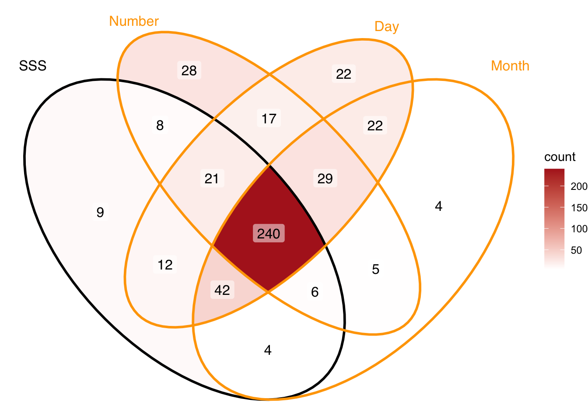
# Clean up :
rm(ID_number,ID_days,ID_month, tmp, x, colNWard2 ,N1,N2,N3)Procedure
For the consistency task, each stimuli were presented randomly and sequentially centrally on the screen. Participant were instructed to click on the screen position where they visualize them. In Van Petersen et al. (2020) and Rothen et al. (2016) the participants were allowed to skip responses.
Stimulus included here were 7 weekdays (Monday to Sunday), 12 months (January to December) and 9 numbers (0 to 9). For all the data from Professor Ward the stimuli were presented in randomized order with the constraint that no stimulus was repeated until all unique stimuli (N = 29) had been presented once. The median display resolution was 1440 X 768, with a maximum of 2560 X 2025 and a minimum of 308 X 149.
Analyses
Consistency tests on the stimulus level
We reproduced the tests extracted from consistency tasks found in the literature such as area and perimeter between repetitions (Rothen et al. 2016; Ward 2022; Van Petersen et al. 2020). Formally, the area (see Equation 1) and perimeter (see Equation 2) are calculated from the triangle (i.e. given three repetitions) formed by the x and y coordinates of the three repetitions of each stimuli (i.e. (x1, y1), (x2, y2), (x3, y3)).
\[ Area = \frac{|x1y2 +x2y3 + x3y1 – x1y3 – x2y1 – x3y2|}{2} \tag{1}\]
\[ Perimeter = \sqrt{(x2 - x1)^2 + (y2 – y1)^2} + \sqrt{(x3 - x2)^2 + (y3 –y2)^2} + \sqrt{(x1 - x3)^2 + (y1 – y3)^2} \tag{2}\]
Each stimuli’s area was then averaged by participants. The area metric is in % of the screen area to be able to compare with the consistency across studies using different screen sizes. To account for screen size and spread variability across the datasets and participants, area and perimeter were also calculated on individually normalized x and y coordinates (z-score). These methods compute consistency metrics at the stimulus level, the rationale is that consistent responses would show less variability between repetitions. For example, smaller area or perimeter of the triangle formed indicate more variability hence more consistent responses between the three repetitions.
Consistency tests on the space-form level
For the novel consistency tests, we extracted geometrical features at the spatial-form level for each repetition separately. Taking the stimuli as an ordered sequence we can consider them as a geometrical segments (i.e. open geometrical form) and polygons (i.e. closed geometrical form), similarly as originally described in Galton (1880).
We harnessed a geospatial analysis, the ‘sf’ package version 1.0.21 (Pebesma and Bivand 2023) to extract polyons and geometry-based features from participant’s 2D (x,y) coordinate responses. This package allows, for example, to build and analyse segments or polygons and then extract multiple geometrical descriptors or features. Informed by the ordinality of the stimulus, we defined segments and polygon by conditions and repetitions. The rationale here was to determine whether, when considering the spatial-forms formed by stimuli as ordered coordinates (i.e. as segments or polygon) they remain consistent between repetitions for each individuals. We extracted the topological validity, topological simplicity and a compactness score for each polygons (i.e. 3 conditions X 3 repetitions: 9 polygons per participants.
Segment self-intersections
The first consistency test extracted from the segments is self-intersection. We considered the spatial-forms as a segment constituted by the lines connecting consecutive stimuli separately for each category and repetitions (i.e. Monday (repetition 1) → Tuesday (repetition 1) → Wednesday (repetition 1), ect) and then counted the number of times each segment self-intersect. The rationale is that SSS should have less chance to produce that self-intersect than control. The number of self-intersections were computed separately for each repetitions and conditions and averaged per participants.
Topological validity and simplicity
We assessed topological validity using geometric validation test. Topological validity tests if a polygons is well-formed and valid according to the Open Geospatial Consortium (OGC) Simple Features Specification (Herring 2010). A polygon is considered topologically valid if it satisfies the following criteria: (1) if polygon rings are simple (i.e., they do not touch or self-intersect), (2) boundary rings to not cross (3) boundary rings may only touch points tangentially (4) rings that define holes are contained within the exterior ring (5) the polygon rings must not splits the polygon (“PostGIS 3.6.2dev Manual,” n.d.). Topological simplicity evaluates whether a geometric object has a simple structure without self-intersections or self-tangencies. According to the OGC Simple Features Specification (Herring 2010), a polygon boundary is considered simple if it does not pass through the same point more than once (“PostGIS 3.6.2dev Manual,” n.d.). For polygons, simplicity requires that each ring does not self-intersect or self-touch. Note that simplicity is a condition for validity: a polygon can be simple but still invalid (e.g., if an interior ring extends outside the exterior ring).
For each participant we tested for topological validity and simplicity across individual 3 categories (weekdays, month and numbers) and 3 repetitions, hence 9 space-forms or polygons. The binary outcome (1 = is valid, 0 = invalid) was then averaged across all 9 forms. Hence, it can span from 1 (all 9 are valid/simple) to 0 (none of the 9 forms are valid/simple). Thus, the topological validity and simplicity score ranges from 0 (none of the nine polygons are valid/simple) to 1 (all nine polygons are valid). For example, if a participant’s polygon for weekdays were valid across all three repetitions, months were valid in two of three repetitions, and numbers were invalid in all repetitions, the topological validity score would be 5/9 ≈ 0.56.
Compactness score
We also implemented a measure of compactness for the polygons. We used the score developed to quantify the gerrymandering of political district by Polsby and Popper (1991). Gerrymandering is a politically motivated strategy of redefining district’s boundary to give the advantage to a political party. This has the consequences to reduce the compactness of those districts as would be expected if they where defined from geomorphology. The compactness is calculated as the ratio of the area and perimeter of a polygon. The rationale is that more compact forms (i.e. higher Polsby–Popper scores) would be more likely in SSS than controls. Formally, the Polsby–Popper score is calculated from the polygon’s area and perimeter Equation 3:
\[ score = \frac{4\pi \cdot Area}{Perimeter^2} \tag{3}\]
Permutation-based feature extraction
Finally, we implemented permutations of the repetition order to derive a permuted measure of consistency. Specifically, instead of using repetitions in chronological order, we shuffled the repetition order between stimulus presentation (i.e. Monday (repetition 2) → Tuesday (repetition 3) → Wednesday (repetition 1), ect) and extracted the geometrical feature from x,y coordinates of same stimulus categories in non-chronological order The form-based tests computed before were relying on the chronologically ordered repetitions. For example, when a stimulus such as Monday was repeated three times, the coordinates for the first presentation of Monday were always paired with the coordinates for the first presentation of Tuesday to construct segments or polygons. However, if synesthetic forms are truly consistent, they should remain stable independently of the chronological order of stimulus presentation. Hence, we permute the repetitions within each condition. Specifically, for each participant and each category, we randomized the response repetition order. For example segments for weekdays were constructed with the x,y coordinates where randomly permuted across repetition order, for example Monday (repetition 1), Tuesday (repetition 3), Wednesday (repetition 2), ect. We predicted that this permuted-based consistency would yield to better classification performance (higher AUC values) compared to chronologically ordered features. The rationale is that genuine synaesthetes would have a consistently valid topology of spatial-forms repetitions regardless of presentation order, whereas controls would show random variation. The permutation scores were calculated for topological validity and Polsby–Popper score.
Receiver Operator Characteristic analyses
Each of the previous method’s performance in classifying SSS from controls was compared with Receiver Operator Characteristics (ROC) analyses. Classification performance was quantified using the area under the curve (AUC), with higher AUC values indicating better discrimination between SSS and control groups. The optimal cutoffs were calculated using Youden’s index(Youden 1950). Discriminant Power (DP) was used as an additional estimate of discrimination performance according to the optimal cutoff (Equation 4). DP around 1 being interpreted as inefficient discrimination.
\[ DP = \frac{\sqrt{3}}{\pi} (\log(\frac{sensitivity}{1−sensitivity}) + \log(\frac{specificity}{(1−specificity)})) \tag{4}\]
The statistical comparison of ROC curves between the methods was operated testing the difference of AUC between pairs of curves using bootstrapping method (1000 times) since it allows to compare methods with different directions. Each bootstrap results in the subtraction of the AUC between the two ROC. Then the each of the AUC difference’s (D) are divided by the standard deviation of those difference and compared to a normal distribution (Equation 5).
\[ D = \frac{AUC_1-AUC_2}{SD} \tag{5}\]
Therefore we statistically compared all the AUC of each methods as the difference to the highest AUC method.
# Define area calculation function
triangle_area <- function(x, y) {
if(length(x) != 3 | length(y) != 3) return(NA)
area <- abs(
x[1]*y[2] + x[2]*y[3] + x[3]*y[1] -
x[1]*y[3] - x[2]*y[1] - x[3]*y[2]
) / 2
return(area)
}## Same with z-scores:
ds <- ds %>%
group_by(ID, stimulus) %>%
mutate(rep_area = triangle_area(x, y)) %>%
ungroup()
## Merge
tmp_perID2 <- ds %>%
ungroup() %>%
group_by(ID) %>%
summarize(Area_perc = sum(rep_area, na.rm = TRUE)/(sum(!is.na(rep_area)))*100, Screen_area = unique(Screen_area)) %>%
select(ID, Area_perc,Screen_area)
tmp_perID2$Area_perc <- tmp_perID2$Area_perc/tmp_perID2$Screen_area
tmp_perID2 <- tmp_perID2 %>% select(ID, Area_perc)
ds_Q <- merge(ds_Q,tmp_perID2,by = "ID")
feature_direction <- c("moreCtl")
rm(tmp_perID2)## Same with z-scores:
ds <- ds %>%
group_by(ID, stimulus) %>%
mutate(rep_area_zs = triangle_area(x_zs, y_zs)) %>%
ungroup()
## Merge
tmp_perID2 <- ds %>% ungroup() %>%
group_by(ID) %>%
summarize(Area_zs = mean(rep_area_zs, na.rm = TRUE)) %>%
select(ID, Area_zs)
ds_Q <- merge(ds_Q,tmp_perID2,by = "ID")
rm(tmp_perID2)
feature_direction <- c(feature_direction,"moreCtl")### Perimeter function:
triangle_perimeter <- function(x, y) {
if(length(x) != 3 | length(y) != 3) return(NA)
# Side lengths
a <- sqrt((x[2] - x[1])^2 + (y[2] - y[1])^2)
b <- sqrt((x[3] - x[2])^2 + (y[3] - y[2])^2)
c <- sqrt((x[1] - x[3])^2 + (y[1] - y[3])^2)
perimeter <- a + b + c
return(perimeter)
}## Compute triangle perimeter by group:
ds <- ds %>%
group_by(ID, stimulus) %>%
mutate(triangle_perim = triangle_perimeter(x, y)*100/Screen_area) %>%
ungroup()
## Summarize By ID:
tmp_ID <- ds %>%
ungroup() %>% group_by(ID,group) %>%
summarize(Perimeter_perc = mean(triangle_perim, na.rm = TRUE)) %>%
select(ID, Perimeter_perc)
## Merge
ds_Q <- merge(ds_Q,tmp_ID,by = "ID")
feature_direction <- c(feature_direction,"moreCtl")## Compute triangle perimeter by group:
ds <- ds %>%
group_by(ID, stimulus) %>%
mutate(triangle_perim_zs = triangle_perimeter(x_zs, y_zs)) %>%
ungroup()
## Summarize By ID:
tmp_ID <- ds %>%
ungroup() %>% group_by(ID,group) %>%
summarize(Perimeter_zs = mean(triangle_perim_zs, na.rm = TRUE)) %>%
select(ID, Perimeter_zs)
## Merge
ds_Q <- merge(ds_Q,tmp_ID,by = "ID")
feature_direction <- c(feature_direction,"moreCtl")# Define function:
count_self_intersections <- function(x, y, verbose = TRUE) {
n <- length(x)
if (n < 4) {
if (verbose) cat("Need at least 4 points to check for self-intersection.\n")
return(0)
}
# Orientation function
orientation <- function(p, q, r) {
val <- (q[2] - p[2]) * (r[1] - q[1]) - (q[1] - p[1]) * (r[2] - q[2])
if (is.na(val)) return(NA)
if (val == 0) return(0)
if (val > 0) return(1) else return(2)
}
# Check if q lies on segment pr
on_segment <- function(p, q, r) {
if (any(is.na(c(p, q, r)))) return(FALSE)
q[1] <= max(p[1], r[1]) && q[1] >= min(p[1], r[1]) &&
q[2] <= max(p[2], r[2]) && q[2] >= min(p[2], r[2])
}
# Main intersection check
segments_intersect <- function(p1, p2, p3, p4) {
o1 <- orientation(p1, p2, p3)
o2 <- orientation(p1, p2, p4)
o3 <- orientation(p3, p4, p1)
o4 <- orientation(p3, p4, p2)
if (any(is.na(c(o1, o2, o3, o4)))) return(FALSE)
# General case
if (o1 != o2 && o3 != o4) return(TRUE)
# Special colinear cases
if (o1 == 0 && on_segment(p1, p3, p2)) return(TRUE)
if (o2 == 0 && on_segment(p1, p4, p2)) return(TRUE)
if (o3 == 0 && on_segment(p3, p1, p4)) return(TRUE)
if (o4 == 0 && on_segment(p3, p2, p4)) return(TRUE)
return(FALSE)
}
count <- 0
for (i in 1:(n - 2)) {
for (j in (i + 2):(n - 1)) {
if (j == i + 1) next # skip adjacent segments
p1 <- c(x[i], y[i])
p2 <- c(x[i + 1], y[i + 1])
p3 <- c(x[j], y[j])
p4 <- c(x[j + 1], y[j + 1])
if (segments_intersect(p1, p2, p3, p4)) {
count <- count + 1
if (verbose) {
cat(sprintf("Intersection #%d: segments (%d-%d) and (%d-%d)\n", count, i, i+1, j, j+1))
}
}
}
}
if (verbose) cat("Total crossings:", count, "\n")
return(count)
}# Number of intersections for each ID X Cond X repetition
# Important! The dataset must be correctly informed about stimulus order.
ds <- ds %>%
group_by(stimulus) %>%
arrange(stimulus) %>%
arrange(ordered(stimulus, levels = c("Monday", "Tuesday", "Wednesday", "Thursday", "Friday","Saturday","Sunday"))) %>%
arrange(ordered(stimulus, levels = c("January", "February", "March", "April", "May","June","July","August","September","October","November","December"))) %>%
ungroup() %>%
group_by(ID, Cond,repetition) %>%
mutate(nLineCross = (count_self_intersections(x,y, verbose = FALSE))) %>%
arrange(ID) # ensure ds remains ordered by ID## Average self-intersections per ID by Cond X repetition
tmp <- ds %>%
group_by(ID,Cond,repetition) %>%
filter(row_number() == 1) %>% # keep only 1 row per IDXCondXrep
ungroup() %>% group_by(ID) %>% # Average per ID
summarise(SelfInter = mean(nLineCross)) %>%
select(ID, SelfInter)
## Merge
ds <- merge(ds, tmp,by = "ID")
ds_Q <- right_join(ds_Q,
(ds %>%
ungroup() %>%
group_by(ID) %>%
filter(row_number() == 1) %>%
select(ID, SelfInter)), by = "ID")
feature_direction <- c(feature_direction,"moreCtl")# Turn off spherical geometry:
sf::sf_use_s2(FALSE)
# Explicitly enforce item order (i.e. ordinality):
ds_segm <- ds %>%
group_by(ID, stimulus) %>%
arrange(stimulus) %>%
arrange(ordered(stimulus, levels = c("Monday", "Tuesday", "Wednesday", "Thursday", "Friday","Saturday","Sunday"))) %>%
arrange(ordered(stimulus, levels = c("January", "February", "March", "April", "May","June","July","August","September","October","November","December"))) %>%
ungroup() %>%
arrange(ID) %>%
filter(!is.nan(x_zs), !is.nan(y_zs)) %>% # sf hates NaN! Not needed anymore,
mutate(
group = as.character(group),
ID = as.character(ID),
Cond = as.character(Cond),
repetition = as.integer(repetition),
dataSource = as.character(dataSource)
) %>%
group_by(ID, Cond, repetition,group) %>%
summarise(
geometry = st_sfc(st_linestring(as.matrix(cbind(x_zs, y_zs)))), # preserves order
.groups = "drop"
) %>%
st_as_sf(crs = NA)## Pass from segment to polygon
ds_poly <- st_cast(ds_segm, "POLYGON")
ds_poly$area <- st_area(ds_poly)
## Poly area
ds_poly <- ds_poly %>%
group_by(ID) %>%
mutate(areaPoly_GA = mean(area, na.rm = TRUE))
## Merge
ds_Q <- right_join(ds_Q,
ds_poly %>% st_drop_geometry() %>% ungroup() %>% group_by(ID) %>% filter(row_number() == 1) %>% select(ID, areaPoly_GA),
by = "ID")
feature_direction <- c(feature_direction,"moreSyn")ds_poly$perimeter <- st_perimeter(ds_poly)
ds_poly <- ds_poly %>%
group_by(ID) %>%
mutate(perimPoly = mean(perimeter, na.rm = TRUE))
ds_Q <- right_join(ds_Q,
ds_poly %>% st_drop_geometry() %>% ungroup() %>% group_by(ID) %>% filter(row_number() == 1) %>% select(ID, perimPoly),
by = "ID")
feature_direction <- c(feature_direction,"moreCtl")# Might depend on cast:
# ds_poly <- st_cast(ds_segm, "POLYGON", group_or_split = TRUE)
ds_poly$isSimple <- st_is_simple(ds_poly)
ds_poly <- ds_poly %>%
group_by(ID) %>%
mutate(isSimple_GA = mean(isSimple, na.rm = TRUE))
ds_Q <- right_join(ds_Q,
ds_poly %>% st_drop_geometry() %>% ungroup() %>% group_by(ID) %>% filter(row_number() == 1) %>% select(ID, isSimple_GA),
by = "ID")
feature_direction <- c(feature_direction,"moreSyn")ds_poly$isValidStruct <- st_is_valid(ds_poly, geos_method = "valid_structure")
ds_poly <- ds_poly %>%
group_by(ID) %>%
mutate(isValidStruct_M = mean(isValidStruct))
ds_Q <- right_join(ds_Q,
ds_poly %>% st_drop_geometry() %>% ungroup() %>% group_by(ID) %>% filter(row_number() == 1) %>% select(ID, isValidStruct_M),
by = "ID")
feature_direction <- c(feature_direction,"moreSyn")ds_perm <- read.csv2("Data/permuted_isValid.csv")
## ATTENTION; RECOMPUTE THE PERMUTATION WITH THE ACTUAL DATASET then remove this
ds_perm <- ds_perm %>% filter(ID %in% ds_Q$ID)
ds_Q <- ds_Q %>% filter(ID %in% ds_perm$ID)
# read.csv2("permuted_isValid.csv")
ds_Perm_perID <- ds_perm %>%
rowwise() %>%
mutate(isValid_perm_M = mean(c_across(n_perm001:n_perm100)), isValid_perm_Med = median(c_across(n_perm001:n_perm100))) %>%
select (ID, group, isValid_perm_M, isValid_perm_Med) # removed isValid_Med_perm_ID since median always underperformed the average
ds_Q <- right_join(ds_Q,
ds_Perm_perID %>% st_drop_geometry() %>% ungroup() %>% group_by(ID) %>% arrange(ID) %>% filter(row_number() == 1) %>% select(ID, isValid_perm_M),
by = "ID")
feature_direction <- c(feature_direction,rep("moreSyn",1))## Polsby–Popper test / Iso-Perimetric Quotient
ds_poly <- ds_poly %>%
mutate(
area = st_area(geometry),
perim = st_length(st_boundary(geometry)),
pp = as.numeric((4 * pi * area) / (perim^2))
)
ds_Q <- right_join(ds_Q,
ds_poly %>% st_drop_geometry() %>% ungroup() %>% group_by(ID) %>% summarize(pp_M = mean(pp, na.rm = TRUE)) %>% select(ID, pp_M),
by = "ID")
feature_direction <- c(feature_direction,"moreSyn")ds_perm_pp <- read.csv2("Data/permuted_pp.csv")
ds_Perm_perID <- ds_perm_pp %>%
rowwise() %>%
mutate(pp_perm_M = mean(c_across(n_perm001:n_perm100), na.rm = TRUE), pp_perm_Med = median(c_across(n_perm001:n_perm100))) %>%
select (ID, group, pp_perm_M, pp_perm_Med) # removed isValid_Med_perm_ID since median always underperformed the average
ds_Q <- right_join(ds_Q,
ds_Perm_perID %>% st_drop_geometry() %>% ungroup() %>% group_by(ID) %>% arrange(ID) %>% filter(row_number() == 1) %>% select(ID, pp_perm_M),
by = "ID")
feature_direction <- c(feature_direction,rep("moreSyn",1))rm(ds_perm, ds_Perm_perID, tmp, All_n, All_n2, All_n3, ID_all, ID_group)gp1 <- ds %>%
filter(ID %in% "1025_MaJo") %>%
filter(Cond %in% "month") %>%
group_by(stimulus) %>%
arrange(stimulus) %>%
arrange(ordered(stimulus, levels = c("Monday", "Tuesday", "Wednesday", "Thursday", "Friday","Saturday","Sunday"))) %>%
arrange(ordered(stimulus, levels = c("January", "February", "March", "April", "May","June","July","August","September","October","November","December"))) %>% # Start ggplot
ggplot(aes(x = x_zs, y = y_zs, group = stimulus, label = stimulus, fill = stimulus)) +
geom_polygon(alpha = 0.4) +
geom_point(size = 0.05, alpha = 0.5) +
geom_text(aes(x = x_zs, y = y_zs), size = 1.5, alpha = 0.3) +
scale_fill_discrete(guide="none") +
coord_equal() +
theme_void() +
labs(title = "Stimulus level") +
theme(plot.title = element_text(hjust = 0.5))
gp2 <- ggplot() +
annotate("segment",
x = 0, xend = 0.5, y = 0, yend = 0,
linewidth = 1,
arrow = grid::arrow(type = "closed")) +
theme_void()
gp3 <- ds_segm %>%
filter(ID %in% "1025_MaJo") %>%
filter(Cond %in% "month") %>%
ggplot(aes(colour = as.factor(repetition))) +
geom_sf(alpha = 0.4) +
guides(colour="none") +
theme_void() +
labs(title = "Space-form Segment") +
theme(plot.title = element_text(hjust = 0.5))
gp4 <- ggplot() +
annotate("segment",
x = 0, xend = 0.5, y = 0, yend = 0,
linewidth = 1,
arrow = grid::arrow(type = "closed")) +
theme_void()
gp5 <- ds_poly %>%
filter(ID %in% "1025_MaJo") %>%
filter(Cond %in% "month") %>%
ggplot(aes(fill = as.factor(repetition))) +
geom_sf(alpha = 0.4) +
guides(fill="none") +
theme_void() +
labs(title = "Polgyon") +
theme(plot.title = element_text(hjust = 0.5))
plot_grid(gp1,gp2,gp3,gp4,gp5,
nrow = 1)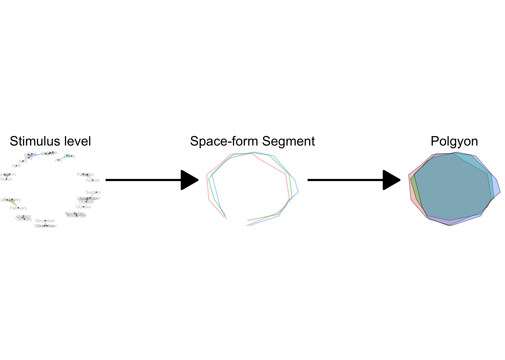
Results
DP <- function(sensitivity, specificity){
sensitivity = sensitivity/100
specificity = specificity/100
return(sqrt(3/pi)*(log(sensitivity/(1-sensitivity)) + log(specificity/(1-specificity))))
}## Define function to compute ROC:
Comp_ROC <- function(data, group_col, feature, ID, Ord){
# Ord: must be: moreSyn or moreCtl. Wheter feature value is moer in Syn or ctl.
if(!setequal(levels(data[[group_col]]), c("Syn","Ctl"))){
return(warning("group name must inculde: Syn Ctl"))
break
}
if (Ord == "moreSyn") {
Dirhere <- "<"
} else if (Ord == "moreCtl") {
Dirhere <- ">"
} else {
return(warning("Ord must be moreSyn or moreCtl"))
}
################ ROC analyses ################
ROC_here <- pROC::roc(data[[group_col]] ~ data[[feature]], data,
direction= Dirhere,
percent=TRUE,
ci=TRUE, boot.n=100, ci.alpha=0.9, stratified=FALSE,
)
# Best threshold using Youden's J
best_coords <- pROC::coords(ROC_here, "best",
ret = c("accuracy","threshold", "sensitivity","specificity","ppv","npv"),
best.method = "youden")
auc_val <- as.numeric(pROC::auc(ROC_here))
ci_auc <- ci.auc(ROC_here)
ciobj <- pROC::ci.se(ROC_here, # CI of sensitivity
specificities=seq(0, 100, 5)) # over a select set of specificities
new_row <- data.frame(
Feature = feature,
AUC = round(auc_val, 4),
DP = DP(as.numeric(best_coords[["sensitivity"]]),as.numeric(best_coords[["specificity"]])),
threshold = as.numeric(best_coords[["threshold"]]),
sensitivity= as.numeric(best_coords[["sensitivity"]]),
specificity= as.numeric(best_coords[["specificity"]]),
# ci_low = as.numeric(ci_auc[1]),
# ci_high = as.numeric(ci_auc[3]),
stringsAsFactors = FALSE
)
################ Contingency table ################
if (Ord == "moreSyn") {
data$diagnosis <- ifelse(data[[feature]] >= best_coords$threshold, "Test : Syn", "Test : Ctl")
} else if (Ord == "moreCtl") {
data$diagnosis <- ifelse(data[[feature]] >= best_coords$threshold, "Test : Ctl","Test : Syn")
} else {
warning("Ord must be moreSyn or moreCtl")
}
tab_counts <- table(data[[group_col]], data$diagnosis)
tab_percent <- prop.table(tab_counts, margin = 1) * 100
result <- matrix(
paste0(tab_counts, " (", round(tab_percent, 1), "%)"),
nrow = nrow(tab_counts),
dimnames = dimnames(tab_counts)
)
################ General description ################
# Attention, na removed
Descr_table <- data %>%
group_by(!!sym(group_col)) %>%
summarize(n = length(unique(!!sym(ID))), Mean = mean(!!sym(feature), na.rm = TRUE), SD = sd(!!sym(feature), na.rm = TRUE))
################ Return outputs ################
return(list(ROC_properties = new_row, Coningency_table =result, Descr_table = Descr_table, ROC_curve = ROC_here, CI = ciobj))
}all_cols <- colnames(ds_Q)
feature_list <- all_cols[42:length(all_cols)]
if(length(feature_list) != length(feature_direction)){
warning("Attention unmatch feature list and direction")
message("Attention unmatch feature list and direction")
}
Feats <- as.matrix(t(rbind(feature_list,feature_direction)))
# Now we will loop through features: INITIALIZE ROC_curves
ROC_curves <- list()
ROC_contingency <- list()
# Initialize dataframe to collect relevant ROC values:
All_ROC <- data.frame(Feature=character(),
AUC = character(),
threshold = integer(),
sensitivity = integer(),
specificity = integer(),
ppv = integer(),
npv = integer(),
high_ci = integer(),
low_ci = integer(),
# power = integer(),
stringsAsFactors=FALSE)
# Loop by features:
for(fit_n in 1:length(Feats[,1])){
ROC_here <- Comp_ROC(ds_Q, "group", Feats[[fit_n,1]],"ID", Feats[[fit_n,2]])
ROC_curves <- c(ROC_curves,list(ROC_here$ROC_curve,ROC_here$ROC_properties$Feature))
All_ROC <- rbind(All_ROC, ROC_here$ROC_properties)
ROC_contingency <- c(ROC_contingency,list(ROC_here$Coningency_table,ROC_here$ROC_properties$Feature))
}# Multiple comparison issue (need ot adjust p val):
# AUC_test <- roc.test(ds_Q$group, ds_Q$isValid_perm_M, ds_Q$Perimeter_zs, boot.n=1000, method = "bootstrap")
# AUC_test2 <- roc.test(ds_Q$group, ds_Q$Perimeter_zs, ds_Q$isValidStruct_M, boot.n=1000, method = "bootstrap")
# AUC_test3 <- roc.test(ds_Q$group, ds_Q$isValid_perm_M, ds_Q$isValidStruct_M, boot.n=1000, method = "bootstrap")
# Compare ALL the features and adjust, but leads to the same results.
nFeat <- length(ROC_curves)
Odd_idx <- seq(1,nFeat,by=2)
Pair_idx <- seq(2,nFeat,by=2)
ROC_listed <- list()
Feattype <- c()
for(i in 1:nFeat){
ROC_listed[[i]] <- ROC_curves[[Odd_idx[i]]]
Feattype <- c(Feattype,ROC_curves[[Pair_idx[i]]])
}
allAUC <- sapply(ROC_listed, auc)
sel_auc <- which(allAUC == sort(allAUC, decreasing = TRUE)[1])
toCompare_roc <- ROC_listed[[sel_auc]]
statistic <- sapply(seq_along(ROC_listed), function(i) {
if (i == sel_auc) return(NA)
roc.test(toCompare_roc, ROC_listed[[i]], boot.n=1000,method = "bootstrap")$statistic
})
pvals <- sapply(seq_along(ROC_listed), function(i) {
if (i == sel_auc) return(NA)
roc.test(toCompare_roc, ROC_listed[[i]], boot.n=1000,method = "bootstrap")$p.value
})
# Adjust for multiple comparison: the order is Feattype
pvals_adj <- p.adjust(pvals, method = "fdr") # or fdr since exploratory, lead to the same.
Results_ROCcomp <- data.frame(
Feature = Feattype,
D = statistic,
pvals = pvals_adj,
isSign = (pvals_adj <.05)
)nFeat <- length(ROC_curves)
Odd_idx <- seq(1,nFeat,by=2)
Pair_idx <- seq(2,nFeat,by=2)
ROC_listed <- list()
Feattype <- c()
for(i in 1:nFeat){
ROC_listed[[i]] <- ROC_curves[[Odd_idx[i]]]
Feattype <- c(Feattype,ROC_curves[[Pair_idx[i]]])
}
Feattype <- recode(Feattype,
"Area_perc" = "Area [screen size %]",
"Area_zs" = "Area [z-score]",
"Perimeter_perc" = "Perimeter [screen size %]",
"Perimeter_zs" = "Perimeter [z-score]",
"SelfInter" = "Segment self-intersections [n/9]",
"areaPoly_GA" = "Area of the polygon [z-score]",
"perimPoly" = "Perimeter of the polygon [z-score]" ,
"isSimple_GA" = "Simple topology [boolean/9]",
"isValidStruct_M" = "Valid structure [boolean/9]",
"isValid_perm_M" = "Permuted valid structure [boolean/9]",
"pp_M" = "Polsby–Popper [score/9]",
"pp_perm_M" = "Permuted P-P [score/9]"
)
ggroc(ROC_listed) +
geom_segment(aes(x = 0, xend = 100, y = 100, yend = 0),
color="grey", size = 0.01) +
scale_color_manual(labels = Feattype,values =pals::cols25(nFeat/2)) + # pals::brewer.pastel1(nFeat)
papaja::theme_apa()+
theme(legend.title = element_blank()) +
coord_equal() +
theme(legend.position="bottom",legend.text=ggplot2::element_text(size=7))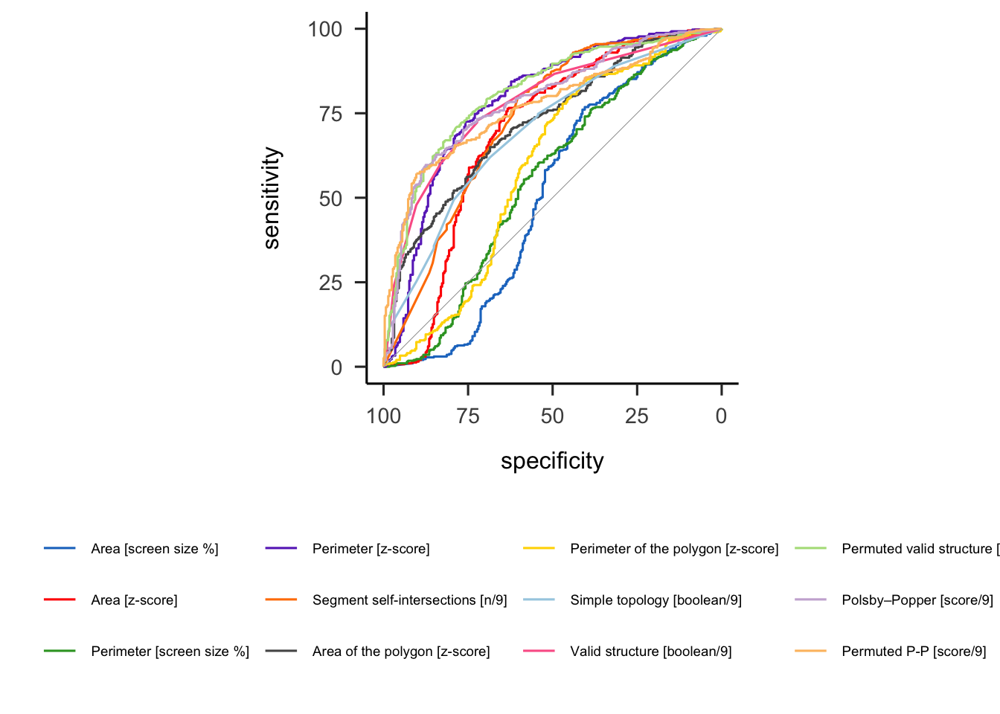
# For tables, use gt() you will save the time I wasted.
# Avoid gt() and kableExtra(), my issue was that the caption was in the middle of the first line.
# I tried all papaja::apa_table, lost much time (cross-referencing becomes a nightmare)
# Apa quarto is lacking a way to handle column spanning
All_ROC_round <- All_ROC %>%
mutate_if(is.numeric, round,2)
All_ROC_round <- All_ROC_round[order(All_ROC_round$AUC, decreasing = TRUE), ]
All_ROC_round <- All_ROC_round %>%
mutate(Feature = recode(Feature,
"Area_perc" = "Area [screen size %]",
"Area_zs" = "Area [z-score]",
"Perimeter_perc" = "Perimeter [screen size %]",
"Perimeter_zs" = "Perimeter [z-score]",
"SelfInter" = "Segment self-intersections [n/9]",
"areaPoly_GA" = "Area of the polygon [z-score]",
"perimPoly" = "Perimeter of the polygon [z-score]" ,
"isSimple_GA" = "Simple topology [boolean/9]",
"isValidStruct_M" = "Valid structure [boolean/9]",
"isValid_perm_M" = "Permuted valid structure [boolean/9]",
"pp_M" = "Polsby–Popper [score/9]",
"pp_perm_M" = "Permuted P-P [score/9]"
))
SortFeat <- All_ROC_round$Feature # Pass further the AUC sorted features# library(flextable)
# All_ROC_round |>
# flextable(All_ROC_round) %>%
# flextable::theme_apa() |>
# autofit()
# kableExtra::kbl(booktabs = TRUE)
# gt()
# "AUC = Area Under the Curve. DP = Discrimination Power."
# papaja::apa_table(All_ROC_round,
# caption = NULL,
# label = NA)
knitr::kable(All_ROC_round)| Feature | AUC | DP | threshold | sensitivity | specificity | |
|---|---|---|---|---|---|---|
| 10 | Permuted valid structure [boolean/9] | 81.16 | 2.13 | 0.17 | 70.78 | 78.55 |
| 11 | Polsby–Popper [score/9] | 78.89 | 2.29 | 0.19 | 59.70 | 87.54 |
| 4 | Perimeter [z-score] | 78.80 | 2.06 | 1.73 | 72.54 | 75.78 |
| 9 | Valid structure [boolean/9] | 78.12 | 1.90 | 0.14 | 72.80 | 72.32 |
| 12 | Permuted P-P [score/9] | 77.15 | 2.46 | 0.20 | 57.18 | 90.31 |
| 5 | Segment self-intersections [n/9] | 72.93 | 1.75 | 1.17 | 79.85 | 60.21 |
| 6 | Area of the polygon [z-score] | 72.03 | 1.36 | 1.29 | 64.99 | 68.51 |
| 8 | Simple topology [boolean/9] | 69.74 | 1.24 | 0.28 | 61.96 | 68.51 |
| 2 | Area [z-score] | 69.27 | 1.68 | 0.08 | 76.32 | 63.32 |
| 7 | Perimeter of the polygon [z-score] | 59.12 | 1.29 | 10.46 | 83.88 | 41.87 |
| 3 | Perimeter [screen size %] | 55.34 | 0.68 | 0.03 | 76.07 | 38.75 |
| 1 | Area [screen size %] | 50.87 | 0.79 | 0.21 | 76.83 | 40.48 |
# Well this should table is present higher in the text, however it needs to be informed by the ROC analyisis (because I want the feature order to always be sorted by AUC).
feat_cols <- colnames(ds_Q[,42:length(colnames(ds_Q))])
fmt_ms <- function(x, digits = 2) {
m <- mean(x, na.rm = TRUE)
Med <- median(x, na.rm = TRUE)
sd <- stats::sd(x, na.rm = TRUE)
paste0(
formatC(m, format = "f", digits = digits),
" (",
formatC(sd, format = "f", digits = digits),
")"
)
}
tmp <- ds_Q %>%
select(c(group, feat_cols)) %>%
pivot_longer(cols = all_of(feat_cols),
names_to = "Feature",
values_to = "Value") %>%
group_by(group, Feature) %>%
summarise(`M *(SD)*` = fmt_ms(Value), .groups = "drop") %>%
pivot_wider(names_from = c(group),
values_from = c(`M *(SD)*`))
tmp <- tmp %>%mutate(Feature = recode(Feature,
"Area_perc" = "Area [screen size %]",
"Area_zs" = "Area [z-score]",
"Perimeter_perc" = "Perimeter [screen size %]",
"Perimeter_zs" = "Perimeter [z-score]",
"SelfInter" = "Segment self-intersections [n/9]",
"areaPoly_GA" = "Area of the polygon [z-score]",
"perimPoly" = "Perimeter of the polygon [z-score]" ,
"isSimple_GA" = "Simple topology [boolean/9]",
"isValidStruct_M" = "Valid structure [boolean/9]",
"isValid_perm_M" = "Permuted valid structure [boolean/9]",
"pp_M" = "Polsby–Popper [score/9]",
"pp_perm_M" = "Permuted P-P [score/9]"
))
Descr_table <- tmp[match(All_ROC_round$Feature, tmp$Feature), ]
Descr_table_zs <- ds_Q %>%
select(feature_list, group,ID) %>%
mutate_at(feature_list,scale) %>%
pivot_longer(cols = all_of(feat_cols),
names_to = "Feature",
values_to = "Value") %>%
group_by(group, Feature) %>%
summarise(`M *(SD)*` = fmt_ms(Value), .groups = "drop") %>%
pivot_wider(names_from = c(group),
values_from = c(`M *(SD)*`))
Descr_table_zs <- Descr_table_zs %>% mutate(Feature = recode(Feature,
"Area_perc" = "Area [screen size %]",
"Area_zs" = "Area [z-score]",
"Perimeter_perc" = "Perimeter [screen size %]",
"Perimeter_zs" = "Perimeter [z-score]",
"SelfInter" = "Segment self-intersections [n/9]",
"areaPoly_GA" = "Area of the polygon [z-score]",
"perimPoly" = "Perimeter of the polygon [z-score]" ,
"isSimple_GA" = "Simple topology [boolean/9]",
"isValidStruct_M" = "Valid structure [boolean/9]",
"isValid_perm_M" = "Permuted valid structure [boolean/9]",
"pp_M" = "Polsby–Popper [score/9]",
"pp_perm_M" = "Permuted P-P [score/9]"
))
Descr_table_zs <- Descr_table_zs[match(All_ROC_round$Feature, Descr_table_zs$Feature),] %>%
rename("Control [zs]" = "Ctl", "SSS [zs]" = "Syn")
# knitr::kable(merge(Descr_table, Descr_table_zs, by = "Feature",sort = FALSE),
# col.names = c("Feature", "Controls", "Sequence-Space Synaesthetes", "Controls Median[zs]", "Sequence-Space Synaesthetes Median[zs]"), align ="c")
tbl_out <- merge(Descr_table, Descr_table_zs, by = "Feature",sort = FALSE) %>%
rename("Control" = "Ctl", "SSS" = "Syn")
# I will not lie, it was painful to build this table:
# Correction: increasing pain did not improve the table. Got a latex error.
# flextable(tbl_out) %>%
# separate_header() |>
# border_remove() |>
# add_header_row(values = c("","Raw", "Standardized [zs]"), colwidths = c(1,2, 2)) %>%
# hline(i = 1, part = "header",j = 2:5) %>%
# flextable::theme_apa() |>
# autofit()
knitr::kable(tbl_out)
rm(tmp)
# Sanity Check: The descriptives for Area_perc calculated here are the ~same as in Ward
## Here:
# ds_Q %>% group_by(group) %>% filter(dataSource %in% "Ward") %>% summarize(M = mean(Area_perc, na.rm = TRUE), sd = sd(Area_perc, na.rm = TRUE))
## Ward
# ds_Q %>% group_by(group) %>% filter(dataSource %in% "Ward") %>% summarize(M = mean(consistency_score, na.rm = TRUE), sd = sd(consistency_score, na.rm = TRUE))| Feature | Control | SSS | Control [zs] | SSS [zs] |
|---|---|---|---|---|
| Permuted valid structure [boolean/9] | 0.12 (0.16) | 0.36 (0.25) | -0.57 (0.64) | 0.41 (1.01) |
| Polsby–Popper [score/9] | 0.11 (0.13) | 0.27 (0.19) | -0.51 (0.69) | 0.37 (1.03) |
| Perimeter [z-score] | 3.30 (1.72) | 1.59 (1.16) | 0.60 (1.04) | -0.44 (0.70) |
| Valid structure [boolean/9] | 0.13 (0.19) | 0.39 (0.28) | -0.54 (0.69) | 0.39 (1.01) |
| Permuted P-P [score/9] | 0.11 (0.17) | 0.41 (0.33) | -0.56 (0.56) | 0.40 (1.06) |
| Segment self-intersections [n/9] | 9.56 (11.31) | 1.87 (5.42) | 0.48 (1.23) | -0.35 (0.59) |
| Area of the polygon [z-score] | 1.00 (0.99) | 1.91 (1.31) | -0.42 (0.79) | 0.30 (1.03) |
| Simple topology [boolean/9] | 0.22 (0.23) | 0.40 (0.27) | -0.39 (0.85) | 0.28 (1.01) |
| Area [z-score] | 0.26 (0.32) | 0.08 (0.14) | 0.42 (1.29) | -0.30 (0.55) |
| Perimeter of the polygon [z-score] | 9.49 (3.44) | 8.39 (2.48) | 0.21 (1.16) | -0.16 (0.83) |
| Perimeter [screen size %] | 0.03 (0.03) | 0.03 (0.08) | 0.03 (0.44) | -0.02 (1.26) |
| Area [screen size %] | 0.46 (0.87) | 0.26 (0.52) | 0.17 (1.25) | -0.12 (0.75) |
Descriptively, the triangle area (in % screen size) between repetition for SSS was surprisingly larger than in previous studies: 0.26% (SD = 0.52%) compared to 0.15% (SD = 0.13 %) in Rothen et al. (2016) and 0.14 % (SD = 0.17) % in Ward et al. (2018), see Table 4. These values also differ between the available datasets (See Figure 6). However, those differences could be mitigated by using individually standardized coordinates, see Table 4.
ROC analyses
All ROC were compared to the permuted validity method, since it led the highest AUC (81.16), all p-values false discovery rate (FDR) adjusted. ROC analyses are summarized in Table 3 and Figure 3. Interestingly, while the permuted validity leads to significantly larger AUC than the Polsby-Popper method, (D = 2.08 , p < .05, it led to similar AUC than the standardized perimeter (D = 1.48, p < .05). This might be explained by the relatively lower sensitivity 59.7 (although relatively higher sensitivity 87.54) of the Polsby-Popper test compared to the Perimeter (72.54) and permuted validity tests (70.78). Additionally, the permuted validity led to significantly higher AUC than the non permuted one (D = 3.1, p < .05).
Hence, the two best AUC performances are from the averaged permuted validity score (AUC = 81.16; DP = 2.13, cut-off = 0.17 corresponding to 1.53 valid of 9 forms) and the standardized perimeter between the repetitions of each stimuli (AUC = 78.8; DP = 2.06, cut-off = 1.73 z-scores). At the proposed cut-off, the permuted validity leads to higher specificity than perimeter (78.55 vs. 75.78) indicating better rejection of controls (i.e. less false negatives), but lower sensitivity (70.78 vs. 72.54), indicating poorer detection of SSS (i.e. more false negatives).
In sum, the permuted validity on the space-form level and the perimeter of standardized coordinates on the stimulus level were the two equally optimal tests to classify controls and SSS.
Further analyses
We conducted further analyses by subsampling the dataset source and questionnaire percentiles. The aim of these analyses was to test the stability of the classifications from different methods across experiments (i.e. datasets) and sample characteristics (i.e. questionnaire scores). We also used a correlational approach to test for correlations between features and questionnaires.
We sub-sampled the dataset source for the five most optimal tests (i.e. higher AUC) and recalculated AUC, sensitivity and sensibility. We found similar values for the different datasets, see Figure 5.
Including only the data by Professor Ward, we subsampled the participants depending on the perecntiles of the questionnaire scores (hence only the data from Professor Ward), taking the 10-0% highest questionnaire scores against the 10 % lowest (. (i.e. 90-100 %). Here also most of the values remain relatively stable independently from the questionnaire distribution of the samples, see Figure 7. Another important point addressed in the literature about consistency test is circularity. The circularity is given in that if consistency tests are used to classify SSS and controls, then those groups will by definition differ in consistency (Root et al. 2025). Hence, we made a correlation matrix with the questionnaire scores and all the tests, see Appendix. The two highest correlations are indeed between the questionnaire score and perimeter (r = .58) and permuted validity (r = .50), see Figure 8.
Some of the participants might have been originally mis-attributed to control or SSS or there might be consistent controls and inconsistent synesthetes (see Root et al. 2025; Eagleman et al. 2007). We found about ~6 % of the full sample’s synesthetes to be consistently classified as controls (i.e. consistent false positive) by the five methods with the highest AUC, see , see Figure 10 and Figure 11. ~3 % controls are consistently classified as SSS (i.e. consistent false negative) Figure 12.
Finally, we also wanted to visualize the average space form of each category at the population level to see if there were qualitative differences between the forms. The figure in the appendix (Figure 9), shows more circular patterns for months and more linear horizontal and vertical for numbers.
Methods - future study
Additional data will be collected in the future using the same consistency test, with the procedural exception that there will be four repetitions per stimuli instead of three ( Sachdeva et al. (2024), Stage 1 in-principle acceptance). Hence for the stimulus levels tests we will compare the area and perimeter of a quadrilateral of four coordinates pairs instead of a triangle. Materials are more details on this study are pre-registered on OSF, including ample size and recruitment method (Sachdeva et al. 2024, Stage 1 in-principle acceptance) (see also https://osf.io/6wn4m).
We will compute the same ROC analyses as in this pre-registration on all the tests. Since we obtain different best AUC per tests depending on the dataset (see Figure 5) it is likely that the best test here will not match with the best test in the to be collected dataset.
Discussion - present study
Our investigation of four datasets found two main consistency tests leading to the optimal classification of SSS from control: standardized perimeter between stimulus repetitions and permuted topological validity on the space-form level.
Further analyses show variabilities between the test’s AUC exists depending on the dataset source, which could explain why we could not replicate Rothen et al. (2016)’s area but rather found the perimeter as a more optimal test. The stability across varying percentiles of the synesthesia questionnaire’s score suggest the tests work as well for more marked forms of SSS (note however that this analysis was limited Professor Ward’s data). The standardized perimeter also leads to slightly higher correlation with the questionnaire scores (r = .57) than permuted topological validity (r = .51), see Figure 8.
In sum, while we could prove similar performances using a different approach based on the space-form level (i.e. topological validity), we found similar classification performances than using stimulus-repetition level test such as perimeter.
Limitations
Although an optimal test to classify SSS might be particularly relevant for experimental purposes, several important limitations need to be considered. First, consistency tests contain only a limited set of sequential stimuli (i.e. months, weeks and the first ten natural numbers) that could potentially elicit synaesthetic experiences. Other ordinal categories such as temperature, clock time, musical keys might be more relevant for some individuals with SSS. For numbers specifically, better consistency tests might be obtained using a larger set size (i.e. including decades and hundreds), as descriptively interesting form changes occur at different decimals in base-10 number systems (Galton 1880).
Second, the use of diagnostic cutoffs assumes categorical distinctions between groups, but SSS may exist on a continuum and scores might be more suitable (Price and Pearson 2013). This limitation is related to the circularity mentioned previously: diagnostic cutoffs as calculated here depend on how SSS and controls are classified in the first place (Simner 2012). Measures of other characteristics of synaesthesia such as automaticity or visual Gabor detection might be necessary to establish external validity (Ward et al. 2018). Indeed, determining the prevalence of SSS in the general population requires definitional choices that might be based on more conservative or lenient criteria (Jonas and Price 2014; Brang et al. 2010; Sagiv et al. 2006; Ward et al. 2018). These difficulties are reflected in the span of current prevalence estimates of SSS: 4.4 % (Brang et al. 2013), 8.1 % (Ward et al. 2018) and 14 % (Seron et al. 1992).
Third, as shown in Figure 5, we find that the optimal criteria can vary across datasets. In other word, we obtain different AUC depending on the datasets. These differences might be explained by different sampling methods biases, for example (Van Petersen et al. 2020) recruited SSS from over one hundred candidates to maximise participant reporting synesthetic experiences.
Topological validity
Surprisingly, permuted topological validity of the spatial-forms led to similar results than the perimeter test. This novel result might be informative about how SSS map ordinal stimuli in space. Indeed, it seems the patterns of spatial-forms follow topological rules analogous to geographical and geometry-based space structures. Analogies between maps and neuroscience have a long history (i.e. retinotopy, sonotopy or somatotopy Eagleman and Goodale 2009). Therefore spatial-forms might originate from the mapping between ordinal or sequential stimuli on idiosyncratic visuo-spatial abilities following topological rules. One of the advantages of using topological validity is that it also classifies responses with the same coordinates as invalid and hence inconsistent, while using the area and perimeter metrics they would qualify as highly consistent responses.
Intermediary Conclusion
The present study compared traditional stimulus-level consistency tests with novel form-level geometric tests for detecting SSS. We found optimal classification performance from permuted topological validity and standardized perimeter between repetitions. Despite not yielding to better classification than stimulus level methods, this new method is theoretically meaningful since genuine synesthetes should produce more compact and topologically valid structures compared to controls. Similarly, the perimeter test captures the stability of the overall spatial configuration across repetitions, which should remain consistent for true SSS individuals regardless of presentation order.
In the future study, we will attempt at validating these criteria on a yet-to be acquired dataset.
References
Baron-Cohen, Simon, John Harrison, Laura H Goldstein, and Maria Wyke. 1993. “Coloured Speech Perception: Is Synaesthesia What Happens When Modularity Breaks Down?” Perception 22 (4): 419–26. https://doi.org/10.1068/p220419.
Brang, David, Luke E. Miller, Marguerite McQuire, V. S. Ramachandran, and Seana Coulson. 2013. “Enhanced Mental Rotation Ability in Time-Space Synesthesia.” Cognitive Processing 14 (4): 429–34. https://doi.org/10.1007/s10339-013-0561-5.
Brang, David, Ursina Teuscher, V. S. Ramachandran, and Seana Coulson. 2010. “Temporal Sequences, Synesthetic Mappings, and Cultural Biases: The Geography of Time.” Consciousness and Cognition 19 (1): 311–20. https://doi.org/10.1016/j.concog.2010.01.003.
Brunson, Jason Cory, and Quentin D. Read. 2023. “ggalluvial: Alluvial Plots in ’Ggplot2’.” http://corybrunson.github.io/ggalluvial/.
Deroy, Ophelia, and Charles Spence. 2013. “Why We Are Not All Synesthetes (Not Even Weakly So).” Psychonomic Bulletin & Review 20 (4): 643–64. https://doi.org/10.3758/s13423-013-0387-2.
Dixon, Mike J., Daniel Smilek, and Philip M. Merikle. 2004. “Not All Synaesthetes Are Created Equal: Projector Versus Associator Synaesthetes.” Cognitive, Affective, & Behavioral Neuroscience 4 (3): 335–43. https://doi.org/10.3758/CABN.4.3.335.
Eagleman, David M. 2009. “The Objectification of Overlearned Sequences: A New View of Spatial Sequence Synesthesia.” Cortex 45 (10): 1266–77. https://doi.org/10.1016/j.cortex.2009.06.012.
Eagleman, David M., and Melvyn A. Goodale. 2009. “Why Color Synesthesia Involves More Than Color.” Trends in Cognitive Sciences 13 (7): 288–92. https://doi.org/10.1016/j.tics.2009.03.009.
Eagleman, David M., Arielle D. Kagan, Stephanie S. Nelson, Deepak Sagaram, and Anand K. Sarma. 2007. “A Standardized Test Battery for the Study of Synesthesia.” Journal of Neuroscience Methods 159 (1): 139–45. https://doi.org/10.1016/j.jneumeth.2006.07.012.
Flournoy, T. 1893. Des Phénomènes de Synopsie (Audition Colorée): Photismes, Schèmes Visuels, Personnifications. Alcan. https://books.google.bj/books?id=JISQxpcyGUMC.
Galton, Francis. 1880. “Visualised Numerals.” Nature 21 (533): 252–56. https://doi.org/10.1038/021252a0.
Gao, Chun-Hui, and Adrian Dusa. 2025. ggVennDiagram: A ’Ggplot2’ Implement of Venn Diagram. https://github.com/gaospecial/ggVennDiagram.
Gould, Cassandra, Tom Froese, Adam B. Barrett, Jamie Ward, and Anil K. Seth. 2014. “An Extended Case Study on the Phenomenology of Sequence-Space Synesthesia.” Frontiers in Human Neuroscience 8 (July). https://doi.org/10.3389/fnhum.2014.00433.
Herring, John R. 2010. “OpenGIS® Implementation Standard for Geographic Information - Simple Feature Access - Part 1: Common Architecture.”
Jarick, Michelle, Mike J. Dixon, Mark T. Stewart, Emily C. Maxwell, and Daniel Smilek. 2009. “A Different Outlook on Time: Visual and Auditory Month Names Elicit Different Mental Vantage Points for a Time-Space Synaesthete.” Cortex 45 (10): 1217–28. https://doi.org/10.1016/j.cortex.2009.05.014.
Jonas, Clare N., and Mark C. Price. 2014. “Not All Synesthetes Are Alike: Spatial Vs. Visual Dimensions of Sequence-Space Synesthesia.” Frontiers in Psychology 5 (October). https://doi.org/10.3389/fpsyg.2014.01171.
Lyons, Ian M., and Sian L. Beilock. 2013. “Ordinality and the Nature of Symbolic Numbers.” The Journal of Neuroscience 33 (43): 17052–61. https://doi.org/10.1523/JNEUROSCI.1775-13.2013.
Pebesma, Edzer, and Roger Bivand. 2023. Spatial Data Science: With applications in R. Chapman and Hall/CRC. https://doi.org/10.1201/9780429459016.
Polsby, Daniel D., and Robert Popper. 1991. “The Third Criterion: Compactness as a Procedural Safeguard Against Partisan Gerrymandering.” SSRN Electronic Journal. https://doi.org/10.2139/ssrn.2936284.
“PostGIS 3.6.2dev Manual.” n.d.
Price, Mark, and David Pearson. 2013. “Toward a Visuospatial Developmental Account of Sequence-Space Synesthesia.” Frontiers in Human Neuroscience 7 (October). https://doi.org/10.3389/fnhum.2013.00689.
Robin, Xavier, Natacha Turck, Alexandre Hainard, Natalia Tiberti, Frédérique Lisacek, Jean-Charles Sanchez, and Markus Müller. 2011. “pROC: An Open-Source Package for R and S+ to Analyze and Compare ROC Curves.” BMC Bioinformatics 12: 77.
Root, Nicholas, Michiko Asano, Helena Melero, Chai-Youn Kim, Anton V. Sidoroff-Dorso, Argiro Vatakis, Kazuhiko Yokosawa, Vilayanur Ramachandran, and Romke Rouw. 2021. “Do the Colors of Your Letters Depend on Your Language? Language-Dependent and Universal Influences on Grapheme-Color Synesthesia in Seven Languages.” Consciousness and Cognition 95 (October): 103192. https://doi.org/10.1016/j.concog.2021.103192.
Root, Nicholas, Ana Chkhaidze, Helena Melero, Anton Sidoroff-Dorso, Gregor Volberg, Yijia Zhang, and Romke Rouw. 2025. “How “Diagnostic” Criteria Interact to Shape Synesthetic Behavior: The Role of Self-Report and Testretest Consistency in Synesthesia Research.” Consciousness and Cognition 129 (March): 103819. https://doi.org/10.1016/j.concog.2025.103819.
Rothen, Nicolas, Kristin Jünemann, Andy D. Mealor, Vera Burckhardt, and Jamie Ward. 2016. “The Sensitivity and Specificity of a Diagnostic Test of Sequence-Space Synesthesia.” Behavior Research Methods 48 (4): 1476–81. https://doi.org/10.3758/s13428-015-0656-2.
Rothen, Nicolas, Anil K. Seth, Christoph Witzel, and Jamie Ward. 2013. “Diagnosing Synaesthesia with Online Colour Pickers: Maximising Sensitivity and Specificity.” Journal of Neuroscience Methods 215 (1): 156–60. https://doi.org/10.1016/j.jneumeth.2013.02.009.
Sachdeva, Chhavi, Emily Whelan, Rebecca Ovalle-Fresa, Alodie Rey-Mermet, Jamie Ward, and Nicolas Rothen. 2024. “How Perceptual Ability Shapes Memory: An Investigation in Healthy Special Populations,” October. https://osf.io/6wn4m.
Sagiv, N, J Simner, J Collins, B Butterworth, and J Ward. 2006. “What Is the Relationship Between Synaesthesia and Visuo-Spatial Number Forms?” Cognition 101 (1): 114–28. https://doi.org/10.1016/j.cognition.2005.09.004.
Seron, Xavier, Mauro Pesenti, Marie-Pascale Noël, Gérard Deloche, and Jacques-André Cornet. 1992. “Images of numbers, or “when 98 is upper left and 6 sky blue”.” Cognition, Numerical Cognition, 44 (1): 159–96. https://doi.org/10.1016/0010-0277(92)90053-K.
Simner, Julia. 2012. “Defining Synaesthesia.” British Journal of Psychology 103 (1): 1–15. https://doi.org/10.1348/000712610X528305.
Smilek, Daniel, Alicia Callejas, Mike J. Dixon, and Philip M. Merikle. 2007. “Ovals of Time: Time-Space Associations in Synaesthesia.” Consciousness and Cognition 16 (2): 507–19. https://doi.org/10.1016/j.concog.2006.06.013.
Van Petersen, Eline, Mareike Altgassen, Rob Van Lier, and Tessa M. Van Leeuwen. 2020. “Enhanced Spatial Navigation Skills in Sequence-Space Synesthetes.” Cortex 130 (September): 49–63. https://doi.org/10.1016/j.cortex.2020.04.034.
Ward, Jamie. 2022. “Optimizing a Measure of Consistency for Sequence-Space Synaesthesia,” January. https://osf.io/5cnr7_v1.
Ward, Jamie, Alberta Ipser, Eva Phanvanova, Paris Brown, Iris Bunte, and Julia Simner. 2018. “The Prevalence and Cognitive Profile of Sequence-Space Synaesthesia.” Consciousness and Cognition 61 (May): 79–93. https://doi.org/10.1016/j.concog.2018.03.012.
Ward, Jamie, and Julia Simner. 2022. “How Do Different Types of Synesthesia Cluster Together? Implications for Causal Mechanisms.” Perception 51 (2): 91–113. https://doi.org/10.1177/03010066211070761.
Wei, Taiyun, and Viliam Simko. 2024. R Package ’corrplot’: Visualization of a Correlation Matrix. https://github.com/taiyun/corrplot.
Wickham, Hadley. 2016. ggplot2: Elegant Graphics for Data Analysis. Springer-Verlag New York. https://ggplot2.tidyverse.org.
Wilke, Claus O. 2025a. cowplot: Streamlined Plot Theme and Plot Annotations for ’Ggplot2’. https://doi.org/10.32614/CRAN.package.cowplot.
———. 2025b. ggridges: Ridgeline Plots in ’Ggplot2’. https://doi.org/10.32614/CRAN.package.ggridges.
Youden, W. J. 1950. “Index for Rating Diagnostic Tests.” Cancer 3 (1): 32–35. https://doi.org/10.1002/1097-0142(1950)3:1<32::aid-cncr2820030106>3.0.co;2-3.
Appendix
The additional analyses in this appendix attempt to address several concerns. Regarding the distribution’s of the scores from the different methods, i.e. whether it is bimodal, see (apx-featDensity?). Then to visualize the stability of the ROC analyses across the datasets, i.e. whether AUC, DP, sensitivity and specificity vary across the four different datasets, see (apx-SM2byds?).
To address circularity concerns that we might find methods that best classifies synesthetes and controls only from the sed on self-reported groups, we attempted two additional approaches: first, testing sub-samples based on percentiles of the questionnaire score sample distribution (see (apx-byquestperc?)). The rationale is that a good consistency test should have similar discriminative performance for strong SSS and weaker SSS. To do this, we re-sampled the SSS and controls based on their questionnaire distribution by percentiles (i.e., comparing 10% highest questionnaire scores vs. 10% lowest, then 20% vs. 20%, etc.). In addition, we correlated the questionnaire scores with the results from different features extracted from the consistency test, see (apx-correlation-with-self-report?).
We also wanted to visually characterize whether certain patterns occur more frequently for some categories than others (i.e. circular pattern for months and linear for numbers). (apx-average-forms?) shows the average forms for each categories. Finally, we wanted to visualize how each participant is classified by each test. From this we found a group of Synaesthetic who consistently are classified as controls by different methods as well as a group of control who are consistently classified as synaesthetes, see (apx-alluvial?).
The following R packages were used for the data visualization in the appendix: ‘ggridges’ v. 0.5.7 (Wilke 2025b), ‘cowplot’ v. 1.2.0 (Wilke 2025a), ‘ggalluvial’ v. 0.12.5 (Brunson and Read 2023), ‘corrplot’ v. 0.95 (Wei and Simko 2024)
Test’s distributions
Regarding the distributions of each tests across the SSS vs. controls, Figure 4 we compared the density plots of each standardized criteria (in order to make them comparable) which visually suggests bimodal distribution.
ds_Q_zs <- ds_Q %>%
select(feature_list, group,ID) %>%
mutate_at(feature_list,scale)
ds_Q_zs <- ds_Q_zs %>%
pivot_longer(cols = !c(group,ID),
names_to = "Feature",
values_to = "zs")
ds_Q_zs <- ds_Q_zs %>%
mutate(Feature = recode(Feature,
"Area_perc" = "Area [screen size %]",
"Area_zs" = "Area [z-score]",
"Perimeter_perc" = "Perimeter [screen size %]",
"Perimeter_zs" = "Perimeter [z-score]",
"perm_zs" = "Permuted Chance level [z-score]",
"Self_Inter" = "Segment self-intersections [n/9]",
"areaPoly_GA" = "Area of the polygon [z-score]",
"perimPoly" = "Perimeter of the polygon [z-score]" ,
"isSimple_GA" = "Simple topology [boolean/9]",
"SelfInter" = "Segment self-intersections [n/9]",
"isValidStruct_M" = "Valid structure [boolean/9]",
"isValid_perm_M" = "Permuted valid structure [boolean/9]",
"pp_M" = "Polsby–Popper [score/9]",
"pp_perm_M" = "Permuted P-P [score/9]"
))
ds_Q_zs <- ds_Q_zs %>% mutate(group = recode(group,
"Syn" = "Sequence-Space Synaesthetes",
"Ctl" = "Controls"))
# So the features are sorted by AUC ;)
ds_Q_zs$Feature <- factor(ds_Q_zs$Feature, levels = rev(All_ROC_round$Feature))
ggplot(ds_Q_zs, aes(x = zs, y = Feature, fill = group, color = group, point_color = group)) +
geom_density_ridges(alpha = 0.5,
jittered_points = TRUE,
position = position_points_jitter(width = 0.05, height = 0),
point_shape = '|',
quantile_lines = TRUE, quantiles = c(0.25,0.75)) +
xlim(-3, 3) +
papaja::theme_apa() +
scale_fill_manual(values = c("Sequence-Space Synaesthetes" = "steelblue",
"Controls" = "firebrick")) +
scale_colour_manual(values = c("Sequence-Space Synaesthetes" = "steelblue",
"Controls" = "firebrick")) +
labs(y = "Method", x = "z-score") +
theme(legend.position = "none")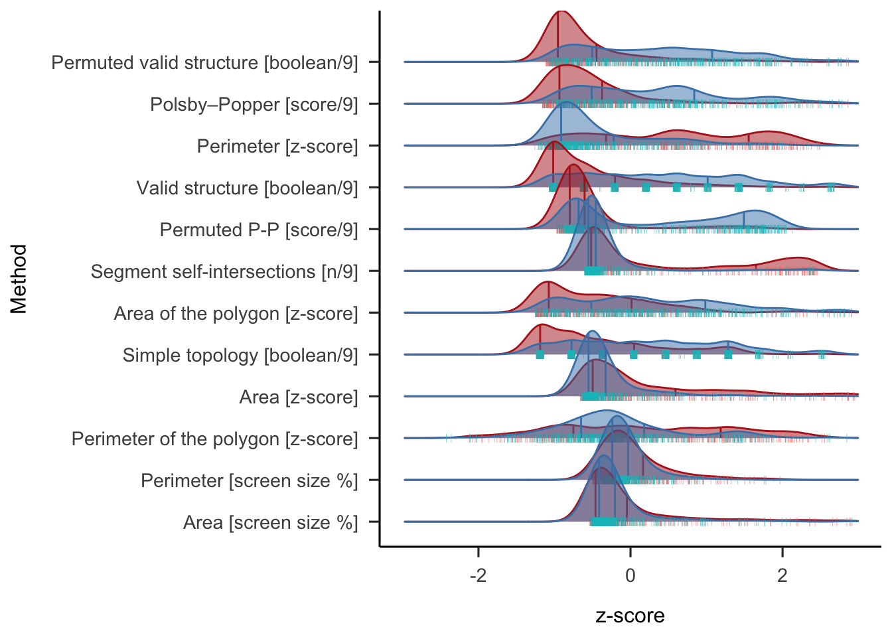
ROC analysis by dataset
Here we compare the ROC analyses results for each data sample of the three methods with the best AUC, see Figure 6. Descriptively, we also looked a the distributions of each methods across SSS and controls Figure 5. Note that the dataset labelled as Ward 2 has more synaesthetes than controls (5:1 ratio). Note that some of the tests led to 100 % Specificity in Van Petersen et al. (2020) dataset.
dataSources <- unique(ds$dataSource)
AUC_ds <- vector("list", length(dataSources))
for(i in 1:length(dataSources)){
ds_here <- ds_Q %>% filter(dataSource %in% dataSources[i])
# INITIALIZE ROC_curves
ROC_curves <- list()
ROC_contingency <- list()
# Initialize dataframe to collect relevant ROC values:
Per_ds_ROC <- data.frame(Feature=character(),
AUC = character(),
threshold=integer(),
sensitivity=integer(),
specificity=integer(),
ppv = integer(),
npv = integer(),
high_ci = integer(),
low_ci = integer(),
stringsAsFactors=FALSE)
# Loop by features:
for(fit_n in 1:length(Feats[,1])){
ROC_here <- Comp_ROC(ds_here, "group", Feats[[fit_n,1]],"ID", Feats[[fit_n,2]])
ROC_curves <- c(ROC_curves,list(ROC_here$ROC_curve,ROC_here$ROC_properties$Feature))
Per_ds_ROC <- rbind(Per_ds_ROC, ROC_here$ROC_properties)
ROC_contingency <- c(ROC_contingency,list(ROC_here$Coningency_table,
ROC_here$ROC_properties$Feature))
}
Per_ds_round <- Per_ds_ROC %>%
mutate_if(is.numeric, round,2)
Per_ds_round <- Per_ds_round[order(Per_ds_round$AUC, decreasing = TRUE), ]
AUC_ds[[i]] <- data.frame(
Feature = Per_ds_round$Feature,
AUC = Per_ds_round$AUC,
DP = Per_ds_round$DP,
Sensitivity = Per_ds_round$sensitivity,
Specificity = Per_ds_round$specificity,
dataSource = dataSources[i],
N = length(ds_here$ID)
)
}
AUC_ds <- do.call(rbind, AUC_ds)
# Comment the following if you want to see all features. I thought the figure were a bit overwhelming for my tiny cognitive capacities
AUC_ds <- AUC_ds %>%
#filter(dataSource != "Ward2") %>%
mutate(Feature = recode(Feature,
"Area_perc" = "Area [screen size %]",
"Area_zs" = "Area [z-score]",
"Perimeter_perc" = "Perimeter [screen size %]",
"Perimeter_zs" = "Perimeter [z-score]",
"perm_zs" = "Permuted Chance level [z-score]",
"Self_Inter" = "Segment self-intersections [n/9]",
"areaPoly_GA" = "Area of the polygon [z-score]",
"perimPoly" = "Perimeter of the polygon [z-score]" ,
"isSimple_GA" = "Simple topology [boolean/9]",
"SelfInter" = "Segment self-intersections [n/9]",
"isValidStruct_M" = "Valid structure [boolean/9]",
"isValid_perm_M" = "Permuted valid structure [boolean/9]",
"pp_M" = "Polsby–Popper [score/9]",
"pp_perm_M" = "Permuted P-P [score/9]")) %>%
filter(Feature %in% All_ROC_round$Feature[1:5]) %>%
mutate(dataSource = recode(dataSource,"PeterCor" = "vanPetersen")) AUC_ds$dataSource <- as.factor(AUC_ds$dataSource)
AUC_ds <- AUC_ds %>%
filter(dataSource != "Ward2") %>%
mutate(dataSource = factor(dataSource, levels=c("Rothen", "Ward", "vanPetersen")))
gp_AUC <- ggplot(AUC_ds, aes(x = dataSource, y = AUC, group = Feature, colour = Feature)) +
geom_point() +
geom_line() +
scale_color_manual(values =pals::cols25(nFeat)) +
papaja::theme_apa() +
xlab('') +
ylim(50,100) +
theme(legend.position="none",axis.text.x = element_blank())
gp_DP <- ggplot(AUC_ds, aes(x = dataSource, y = DP, group = Feature, colour = Feature)) +
geom_point() +
geom_line() +
scale_color_manual(values =pals::cols25(nFeat)) +
papaja::theme_apa() +
xlab(' ') +
ylim(0,6) +
theme(legend.position="none",axis.text.x = element_blank())
gp_Sensitivity <- ggplot(AUC_ds, aes(x = dataSource, y = Sensitivity, group = Feature, colour = Feature)) +
geom_point() +
geom_line() +
scale_color_manual(values =pals::cols25(nFeat)) +
papaja::theme_apa() +
xlab(' ') +
ylim(50,100) +
theme(legend.position="none",axis.text.x = element_text(angle = 90))
gp_Specificity <- ggplot(AUC_ds, aes(x = dataSource, y = Specificity, group = Feature, colour = Feature)) +
geom_point() +
geom_line() +
scale_color_manual(values =pals::cols25(nFeat)) +
papaja::theme_apa() +
xlab(' ') +
ylim(50,100) +
theme(legend.position="none",axis.text.x = element_text(angle = 90))
legend <- get_legend(
ggplot(AUC_ds, aes(x = dataSource, y = Specificity, group = Feature, colour = Feature)) +
geom_point() +
papaja::theme_apa() +
scale_color_manual(values =pals::cols25(nFeat)) +
guides(color = guide_legend(nrow = 2)) +
theme( legend.justification = c(0.2,1), legend.position = "bottom",
legend.text=ggplot2::element_text(size=10))
)
plot_grid(gp_AUC, gp_DP,gp_Sensitivity,gp_Specificity,
labels = c("A","B","D","E"),legend = legend, ncol=2,
rel_heights = c(1, 1.3, 0.4)) # height of each row. 3rd row is legend, 10% of the others.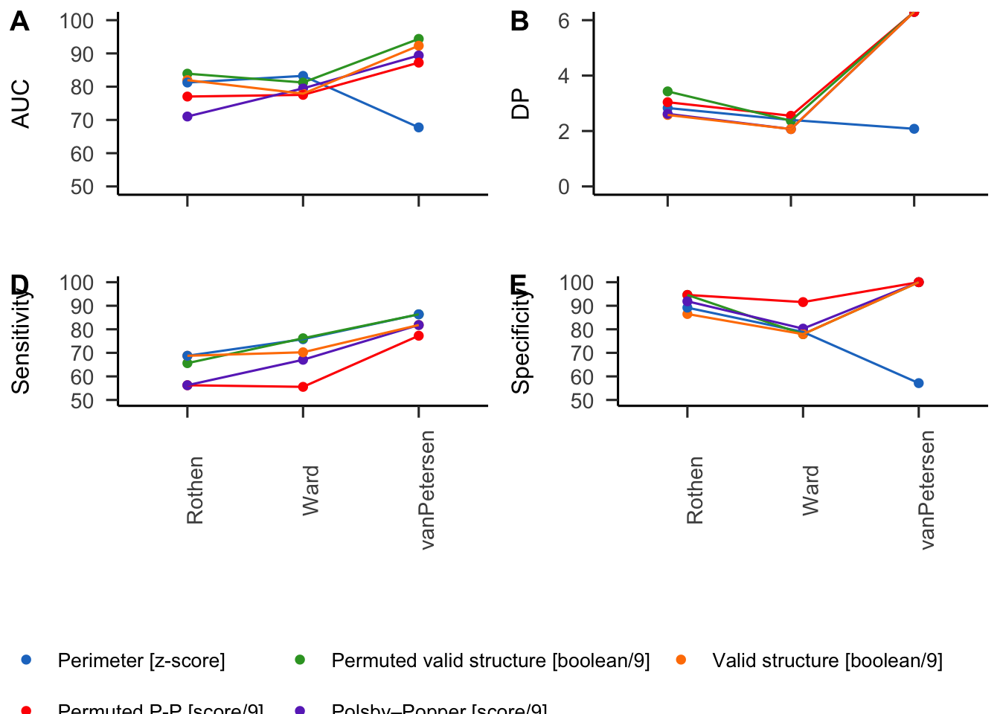
ds_Q_zs <- ds_Q %>%
select(feature_list, group,ID, dataSource) %>%
mutate_at(feature_list,scale)
ds_Q_zs <- ds_Q_zs %>%
pivot_longer(cols = !c(group,ID, dataSource),
names_to = "Feature",
values_to = "zs")
ds_Q_zs <- ds_Q_zs %>%
mutate(Feature = recode(Feature,
"Area_perc" = "Area [screen size %]",
"Area_zs" = "Area [z-score]",
"Perimeter_perc" = "Perimeter [screen size %]",
"Perimeter_zs" = "Perimeter [z-score]",
"perm_zs" = "Permuted Chance level [z-score]",
"Self_Inter" = "Segment self-intersections [n/9]",
"areaPoly_GA" = "Area of the polygon [z-score]",
"perimPoly" = "Perimeter of the polygon [z-score]" ,
"isSimple_GA" = "Simple topology [boolean/9]",
"SelfInter" = "Segment self-intersections [n/9]",
"isValidStruct_M" = "Valid structure [boolean/9]",
"isValid_perm_M" = "Permuted valid structure [boolean/9]",
"pp_M" = "Polsby–Popper [score/9]",
"pp_perm_M" = "Permuted P-P [score/9]"
))
ds_Q_zs <- ds_Q_zs %>% mutate(group = recode(group,
"Syn" = "Sequence-Space Synaesthetes",
"Ctl" = "Controls"))
# So the features are sorted by AUC ;)
ds_Q_zs$Feature <- factor(ds_Q_zs$Feature, levels = rev(All_ROC_round$Feature))
ggplot(ds_Q_zs, aes(x = zs, y = Feature, fill = group, color = group, point_color = group)) +
geom_density_ridges(alpha = 0.5,
jittered_points = TRUE,
position = position_points_jitter(width = 0.05, height = 0),
point_shape = '|',
quantile_lines = TRUE, quantiles = c(0.25,0.75)) +
xlim(-3, 3) +
papaja::theme_apa() +
scale_fill_manual(values = c("Sequence-Space Synaesthetes" = "steelblue",
"Controls" = "firebrick")) +
scale_colour_manual(values = c("Sequence-Space Synaesthetes" = "steelblue",
"Controls" = "firebrick")) +
labs(y = "Method", x = "z-score") +
facet_grid(~ dataSource) +
theme(legend.position = "none",axis.text=element_text(size=9))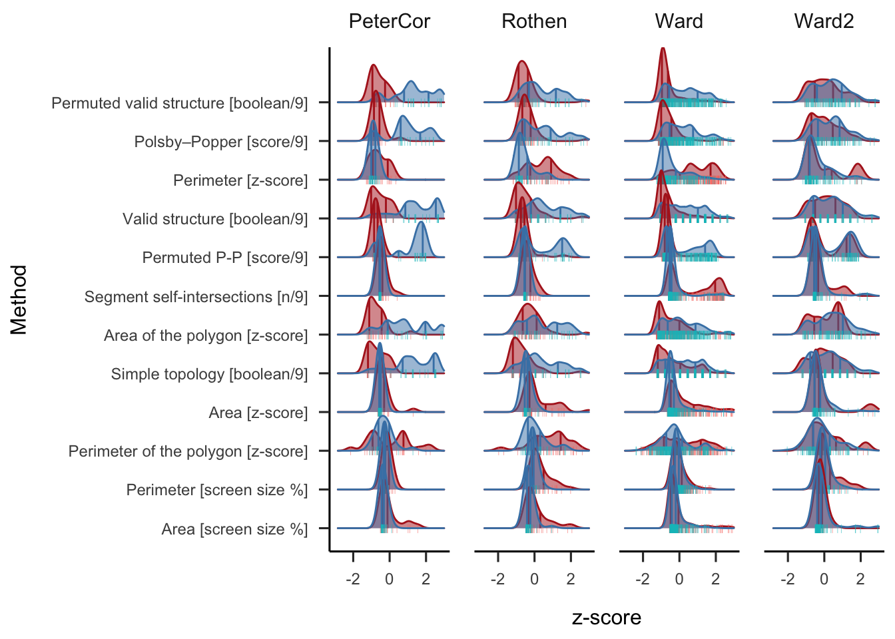
ROC Analysis Sub-sampled data by questionnaire quantiles (20% steps)
We compared the data sampled by the questionnaire score. Based on the distribution of the questionnaire score, we sampled the 10 % with the lowest and 10 % with the highest scores. Those are then compared with the 20 and 20 % and so on until 40 and 40 %. The rationale of this procedure is that AUC, sensitivity and specificity should remain stable across percentiles for a feature to be valid, see Figure 7. In other words the ROC should remain unchanged if we take extreme groups compared to less extreme ones.
ds_Q2 <- ds_Q %>% filter(dataSource %in% c("Ward","Ward2")) %>% filter(!is.na(`questionnaire score`))
p <- seq(0,1,0.10)
quant <- quantile(ds_Q2$`questionnaire score`, probs = p)
quant <- as.numeric(quant)
AUC_perctils <- vector("list", length(quant)/2)
for(quant_n in 1:(length(quant)/2)){
All_ROC <- data.frame(Feature=character(),
AUC = character(),
threshold=integer(),
sensitivity=integer(),
specificity=integer(),
ppv = integer(),
npv = integer(),
high_ci = integer(),
low_ci = integer(),
stringsAsFactors=FALSE)
ds_Q2_quant_n <- ds_Q2 %>%
filter(`questionnaire score` <= quant[quant_n] | `questionnaire score` >= quant[length(quant)-quant_n])
# hist(ds_Q2_quant_n$`questionnaire score`)
# Loop by features:
for(fit_n in 1:length(Feats[,1])){
ROC_here <- Comp_ROC(ds_Q2_quant_n, "group", Feats[[fit_n,1]],"ID",Feats[[fit_n,2]])
ROC_curves <- c(ROC_curves,list(ROC_here$ROC_curve,ROC_here$ROC_properties$Feature))
All_ROC <- rbind(All_ROC, ROC_here$ROC_properties)
ROC_contingency <- c(ROC_contingency,list(ROC_here$Coningency_table,ROC_here$ROC_properties$Feature))
}
All_ROC_round <- All_ROC %>%
mutate_if(is.numeric, round,2)
All_ROC_round <- All_ROC_round[order(All_ROC_round$AUC, decreasing = TRUE), ]
AUC_perctils[[quant_n]] <- data.frame(
Feature = All_ROC_round$Feature,
AUC = All_ROC_round$AUC,
DP = All_ROC_round$DP,
Sensitivity = All_ROC_round$sensitivity,
Specificity = All_ROC_round$specificity,
Quant_min = quant[quant_n],
Quant_max = quant[length(quant)-quant_n],
quant_n = quant_n
)
# print(knitr::kable(All_ROC_round))
}
AUC_perctils <- do.call(rbind, AUC_perctils)
AUC_perctils$quant_n <- as.factor(AUC_perctils$quant_n)
levels(AUC_perctils$quant_n) <- c("1" = "10 & 90%",
"2" = "20 & 80%",
"3" = "30 & 70%",
"4" = "40 & 60%",
"5" = "100%")
AUC_perctils <- AUC_perctils %>%
filter(Feature %in% All_ROC$Feature[order(All_ROC$AUC, decreasing = TRUE)][1:5]) %>%
mutate(Feature = recode(Feature,
"Area_perc" = "Area [screen size %]",
"Area_zs" = "Area [z-score]",
"Perimeter_perc" = "Perimeter [screen size %]",
"Perimeter_zs" = "Perimeter [z-score]",
"perm_zs" = "Permuted Chance level [z-score]",
"Self_Inter" = "Segment self-intersections [n/9]",
"areaPoly_GA" = "Area of the polygon [z-score]",
"perimPoly" = "Perimeter of the polygon [z-score]" ,
"isSimple_GA" = "Simple topology [boolean/9]",
"SelfInter" = "Segment self-intersections [n/9]",
"isValidStruct_M" = "Valid structure [boolean/9]",
"isValid_perm_M" = "Permuted valid structure [boolean/9]",
"pp_M" = "Polsby–Popper [score/9]",
"pp_perm_M" = "Permuted P-P [score/9]"))gp_AUC <- ggplot(AUC_perctils, aes(x = quant_n, y = AUC, group = Feature, colour = Feature)) +
geom_path() +
geom_point() +
scale_color_manual(values =pals::cols25(nFeat)) + #
papaja::theme_apa() +
xlab(' ') +
ylim(50,100) +
theme(legend.position="none",axis.text.x = element_blank())
gp_DP <- ggplot(AUC_perctils, aes(x = quant_n, y = DP, group = Feature, colour = Feature)) +
geom_path() +
geom_point() +
scale_color_manual(values =pals::cols25(nFeat)) + #
papaja::theme_apa() +
xlab(' ') +
ylim(0,6) +
theme(legend.position="none",axis.text.x = element_blank())
gp_Sensitivity <- ggplot(AUC_perctils, aes(x = quant_n, y = Sensitivity, group = Feature, colour = Feature)) +
geom_path() +
geom_point() +
scale_color_manual(values =pals::cols25(nFeat)) + #
papaja::theme_apa() +
xlab(' ') +
ylim(50,100) +
theme(legend.position="none",axis.text.x = element_text(angle = 90))
gp_Specificity <- ggplot(AUC_perctils, aes(x = quant_n, y = Specificity, group = Feature, colour = Feature)) +
geom_path() +
geom_point() +
scale_color_manual(values =pals::cols25(nFeat)) + #
papaja::theme_apa() +
xlab(' ') +
ylim(50,100) +
theme(legend.position="none",axis.text.x = element_text(angle = 90))
legend <- get_legend(
ggplot(AUC_perctils, aes(x = quant_n, y = Specificity, group = Feature, colour = Feature)) +
geom_point() +
papaja::theme_apa() +
scale_color_manual(values =pals::cols25(nFeat)) +
guides(color = guide_legend(nrow = 2)) +
theme( legend.justification = c(0.2,1), legend.position = "bottom",
legend.text=ggplot2::element_text(size=10))
)
plot_grid(gp_AUC, gp_DP,gp_Sensitivity,gp_Specificity,
labels = c("A","B","D","E"),legend = legend, ncol=2,
rel_heights = c(1, 1.3, 0.4)) # height of each row. 3rd row is legend, 10% of the others.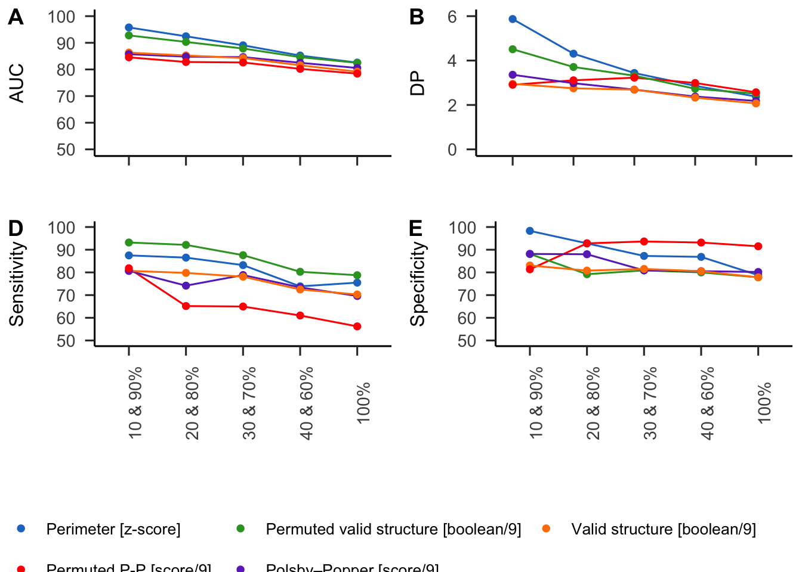
Correlation with self-report
The best criterion should also best correlate with SSS self-reported questionnaire score. Works only with Ward’s aggregated data, see Figure 8.
# Or shorter version (no details on questionaire):
sel_dsQ <- ds_Q %>%
select(c(`questionnaire score`,feature_list)) %>%
filter(!is.na(`questionnaire score`)) %>%
select_if(~ !any(is.na(.)))
cols <- colnames(sel_dsQ)
cols[cols %in% SortFeat] <- SortFeat
sel_dsQ <- sel_dsQ[, cols]
sel_dsQ <- sel_dsQ %>%
select(c("questionnaire score",All_ROC_round$Feature[1:5])) %>%
rename("Perimeter [z-score]" = "Perimeter_zs",
"Valid structure [mean binary/9]" = "isValidStruct_M",
"Permuted valid structure [mean binary/9]" = "isValid_perm_M",
"Polsby–Popper [mean(score)]" = "pp_M",
"Permuted P−P [score/9]" = "pp_perm_M")
sel_CorMat <- cor(sel_dsQ)
sel_CorMat_test <- cor.mtest(sel_dsQ)
corrplot(abs(sel_CorMat), method = 'number', diag=FALSE, type = "lower",tl.col = 'black', cl.pos = 'n',col = c('black', 'black'))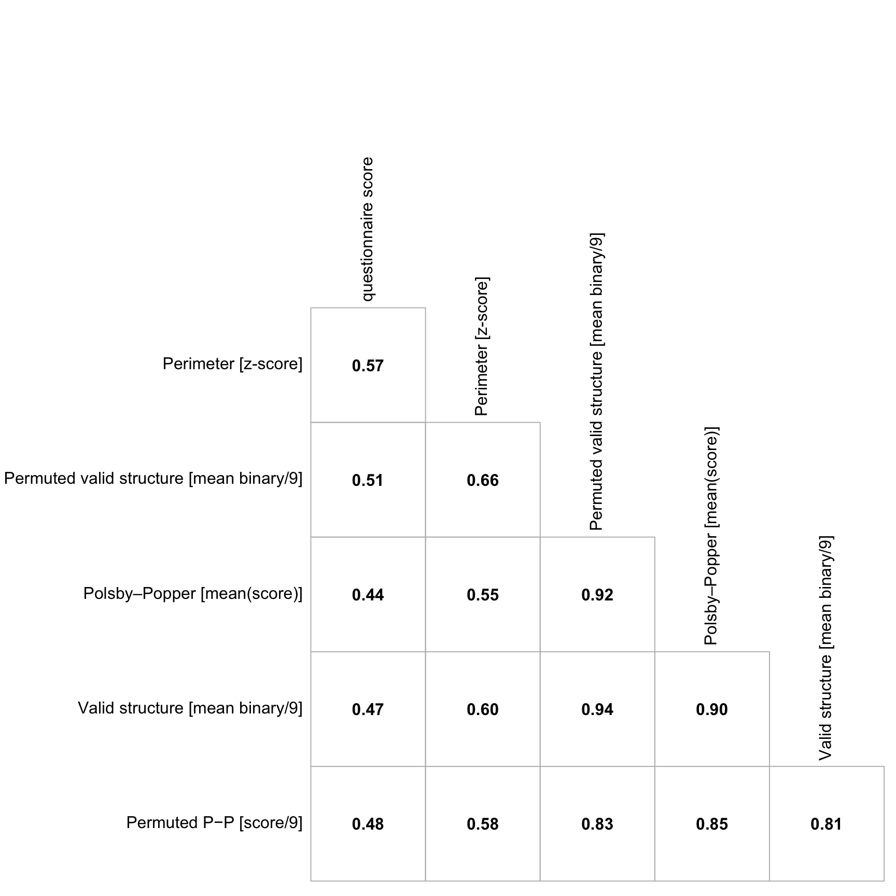
Centred average forms
In this additional analyses we attempted at visualizing the average for each categories to see whether a pattern could be discerned on a qualitative level. To avoid negative coordinates, we shifted all the z-scores from the whole dataset minimum for the x and y coordinates. Then we anchored to the coordinate 0,0 the stimulus “1” for numbers, “Monday” for weekdays and “January” for months. We then plotted all the space forms with transparency, see Figure 9.
Descriptively it is possible to see more circular pattern for months and horizontal and vertical patterns for numbers. Also the averaged forms appear to be more clearly defined in the synaesthetes than control.
# 1. I need to shift all the data to avoid negative numbers
ds$x_zs_shift <- ds$x_zs -min(ds$x_zs) # Can also run with x and y.
ds$y_zs_shift <- ds$y_zs -min(ds$y_zs)
# 2. Generate the vector with the to be substracted values
target_stimuli <- c("1", "Monday", "January")
# Extract the target stimuli values
target_values <- ds %>%
filter(stimulus %in% target_stimuli) %>%
select(ID, Cond, repetition, stimulus, x_zs_shift, y_zs_shift)
# anchor each figure
ds_adj <- ds %>%
left_join(
target_values %>%
pivot_wider(
names_from = stimulus,
values_from = c(x_zs_shift, y_zs_shift),
names_sep = "_stim_"
),
by = c("ID", "Cond", "repetition")
)
# Adjust the coordinates based on the anchor by categories:
# x coordinate
## Numbers
ds_adj$x_adj[!is.na(ds_adj$x_zs_shift_stim_1)] <-
ds$x_zs_shift[!is.na(ds_adj$x_zs_shift_stim_1)] -
ds_adj$x_zs_shift_stim_1[!is.na(ds_adj$x_zs_shift_stim_1)]
## Weekdays
ds_adj$x_adj[!is.na(ds_adj$x_zs_shift_stim_Monday)] <-
ds$x_zs_shift[!is.na(ds_adj$x_zs_shift_stim_Monday)] -
ds_adj$x_zs_shift_stim_Monday[!is.na(ds_adj$x_zs_shift_stim_Monday)]
## Month
ds_adj$x_adj[!is.na(ds_adj$x_zs_shift_stim_January)] <-
ds$x_zs_shift[!is.na(ds_adj$x_zs_shift_stim_January)] -
ds_adj$x_zs_shift_stim_January[!is.na(ds_adj$x_zs_shift_stim_January)]
# same for y coordinate
ds_adj$y_adj[!is.na(ds_adj$y_zs_shift_stim_1)] <-
ds$y_zs_shift[!is.na(ds_adj$y_zs_shift_stim_1)] -
ds_adj$y_zs_shift_stim_1[!is.na(ds_adj$y_zs_shift_stim_1)]
ds_adj$y_adj[!is.na(ds_adj$y_zs_shift_stim_Monday)] <-
ds$y_zs_shift[!is.na(ds_adj$y_zs_shift_stim_Monday)] -
ds_adj$y_zs_shift_stim_Monday[!is.na(ds_adj$y_zs_shift_stim_Monday)]
ds_adj$y_adj[!is.na(ds_adj$y_zs_shift_stim_January)] <-
ds$y_zs_shift[!is.na(ds_adj$y_zs_shift_stim_January)] -
ds_adj$y_zs_shift_stim_January[!is.na(ds_adj$y_zs_shift_stim_January)] ds_adj$group <- recode(ds_adj$group, "Ctl" = "Control", "Syn" = "SSS")
# AVERAGE FIGURE:
ds_adj %>%
# filter(ID %in% "84735") %>%
arrange(ordered(stimulus, levels = c("Monday", "Tuesday", "Wednesday", "Thursday", "Friday","Saturday","Sunday"))) %>%
arrange(ordered(stimulus, levels = c("January", "February", "March", "April", "May","June","July","August","September","October","November","December"))) %>%
ggplot(aes(x = x_adj, y = y_adj, group = as.factor(repetition))) +
geom_path(aes(x = x_adj, y = y_adj), alpha = 0.02, colour = "black") +
facet_wrap(group ~ Cond) +
papaja::theme_apa() +
labs(x = "x [ centered z-score]",
y = "y [ centered z-score]")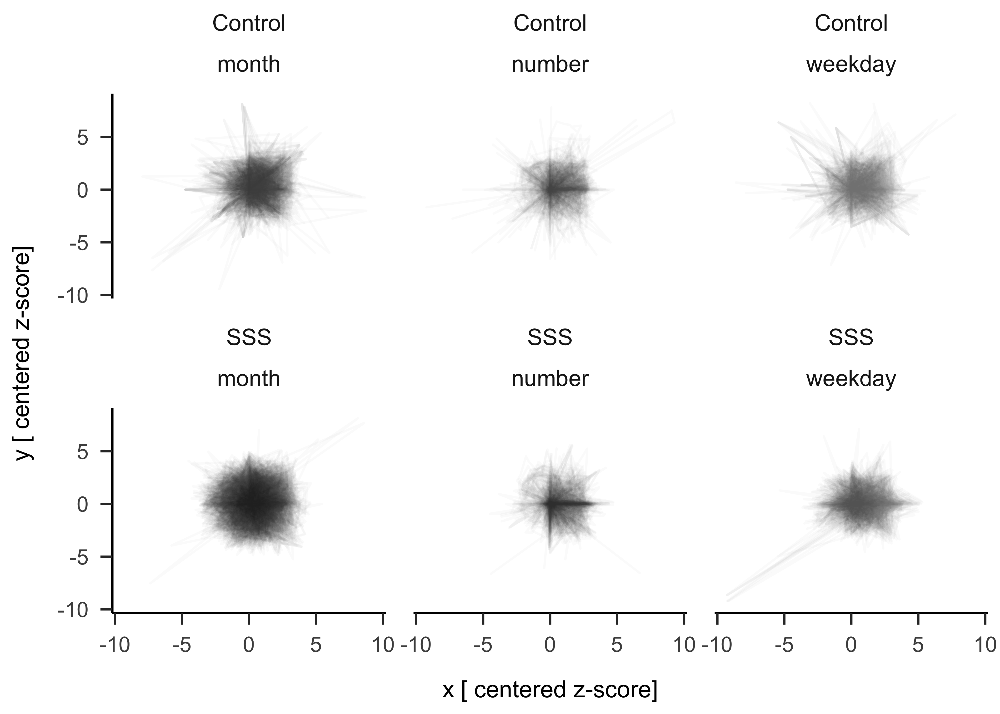
Alluvial plot
Are false positives and negatives share some characteristics? To answer this question qualitatively we identified two group of self-reported SSS participants who care consistently classified as controls by the five methods with the highest AUC (i.e. consistent false negatives), see dark blue lines in Figure 10. On the other side we identified a group of controls who are consistently classified as SSS by the five methods with the highest AUC, see dark red lines in Figure 10 .
AllList <- list(Group = ds_Q$ID[ds_Q$group == "Syn"])
ds_Q$pass_SynGroup <- ds_Q$group == "Syn"
All_ROC_round <- All_ROC %>%
mutate_if(is.numeric, round,2)
All_ROC_round <- All_ROC_round[order(All_ROC_round$AUC, decreasing = TRUE), ]
for(feat_i in 1:length(All_ROC_round$Feature) ){
feat_here <- All_ROC_round$Feature[feat_i]
if(feat_i %in% c(2,3,4,5)){ # Sorry for the lazy programming here
ds_Q[[paste0("pass_",feat_here)]] <- ds_Q[[feat_here]] >= All_ROC_round$threshold[feat_i]
AllList[[feat_here]] <- (ds_Q$ID[ds_Q[[feat_here]] >= All_ROC_round$threshold[feat_i]])
} else {
ds_Q[[paste0("pass_",feat_here)]] <- ds_Q[[feat_here]] <= All_ROC_round$threshold[feat_i]
AllList[[feat_here]] <- (ds_Q$ID[ds_Q[[feat_here]] <= All_ROC_round$threshold[feat_i]])
}
}
df_long <- ds_Q %>%
filter(!ID %in% "69253") %>%
select("ID", starts_with("pass")) %>%
mutate( ID = factor(ID),
Syngroup = factor(pass_SynGroup)) %>%
pivot_longer(
cols = starts_with("pass"),
names_to = "test",
values_to = "result"
)
test_order <- c("pass_SynGroup", paste0("pass_",All_ROC_round$Feature))
df_long$test <- factor(df_long$test, levels = test_order)
df_long <- df_long %>%
filter(test %in% levels(df_long$test)[1:6]) %>%
mutate(test = recode(test, "pass_SynGroup" = "Group",
"pass_Perimeter_zs" = "Perimeter [z-score]",
"pass_isValidStruct_M" = "Valid structure [mean binary/9]",
"pass_Area_zs" = "Area [z-score]",
"pass_isValid_perm_M" = "Permuted valid structure [mean binary/9]",
"pass_SelfInter" = "Segment self-intersections [n/9]",
"pass_perm_zs" = "Permuted Chance level [z-score]",
"pass_pp_M" = "Polsby–Popper [score/9]"))
## ID that fail all 5 tests (except the group one) among the controls
df_long$test <- as.factor(df_long$test)
ID_SynFail5Test <- df_long %>%
filter(Syngroup %in% TRUE) %>% # Only synesthetes (TRUE = Syn)
filter(test %in% levels(df_long$test)[2:6]) %>% # select first 5 tests
group_by(ID) %>%
mutate(totRes = sum(result)) %>%
filter(totRes == 0) # 1 because we also have the Snygroup
ID_SynFail5Test <- unique(ID_SynFail5Test$ID)
## ID Ctl pass all tests (except the group one)
ID_CtlPass5Test <- df_long %>%
filter(Syngroup %in% FALSE) %>% # Only controls
filter(test %in% levels(df_long$test)[2:6]) %>% # select first 5 tests
group_by(ID) %>%
mutate(totRes = sum(result)) %>%
filter(totRes == 5) # 1 because we also have the Snygroup
ID_CtlPass5Test <- unique(ID_CtlPass5Test$ID)
df_long$Syngroup <- as.character(df_long$Syngroup)
df_long$Syngroup[df_long$ID %in% ID_SynFail5Test] <- "Highlight"
df_long$Syngroup[df_long$ID %in% ID_CtlPass5Test] <- "Highlight2"
df_long %>%
filter(test %in% levels(df_long$test)[1:6]) %>%# Keep top10 for readability
# mutate(result = !result) %>% # Hence true = Syn
ggplot(aes(x = test, stratum = factor(result),
alluvium = ID, # Keep the same color for the same ID across tests
fill = Syngroup, label = result)) +
geom_flow(stat = "alluvium",alpha = 1) +
geom_stratum(aes(fill = factor(result)), alpha = 0.6) +
scale_fill_manual(values = c("TRUE" = "steelblue",
"FALSE" = "firebrick",
"Highlight" ="blue",
"Highlight2" ="red")) +
theme_minimal() +
labs(x = "Test",
y = "Number of IDs") +
theme(axis.ticks.x=element_blank(),
panel.grid.major.x = element_blank(),
axis.text.x = element_text(angle = 90),
legend.position = "none")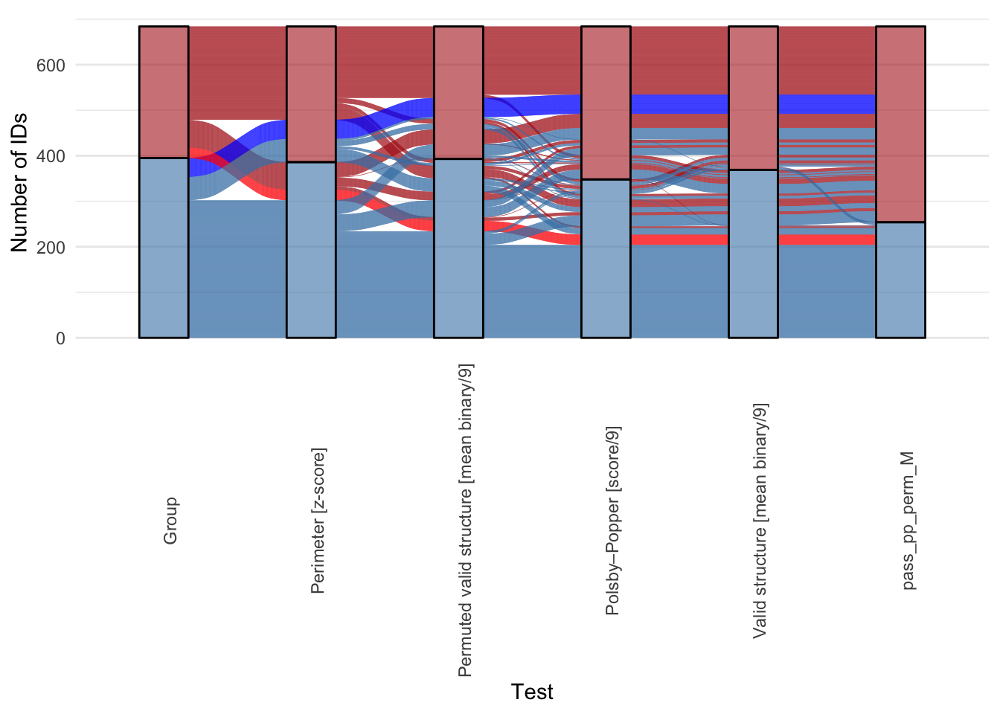
On one side 6.12 % of all participants, that is 42 Synaesthetes where consistently classified as controls by all five tests, see Figure 11. On the other side 3.35 % of all participants, 23 controls where consistently classified as SSS by all five tests, see Figure 12. Given the different approaches of each methods, the identified participants might be on one side non-genuine synesthetes and on the other controls who have SSS but are either not aware or did not identify it as such.
ds %>%
filter(ID %in% ID_SynFail5Test) %>%
group_by(stimulus) %>%
arrange(stimulus) %>%
arrange(ordered(stimulus, levels = c("Monday", "Tuesday", "Wednesday", "Thursday", "Friday","Saturday","Sunday"))) %>% arrange(ordered(stimulus, levels = c("January", "February", "March", "April", "May","June","July","August","September","October","November","December"))) %>% # Start ggplot
ggplot(aes(x = x_zs, y = y_zs, group = stimulus, label = stimulus, fill = stimulus)) +
# geom_text(aes(x = X_mean_zs+0.1, y = Y_mean_zs+0.1), colour = "black", size = 0.5) +
# geom_path(aes(x = X_mean_zs, y = Y_mean_zs, group = 1)) +
geom_path(aes(x = x_zs, y = y_zs, group = repetition), alpha = 0.2) +
geom_text(aes(x = x_zs+0.1, y = y_zs+0.1), size = 0.5, alpha = 0.5) +
facet_wrap(ID ~ Cond) +
theme_void() +
theme(strip.text = element_text(size = 5))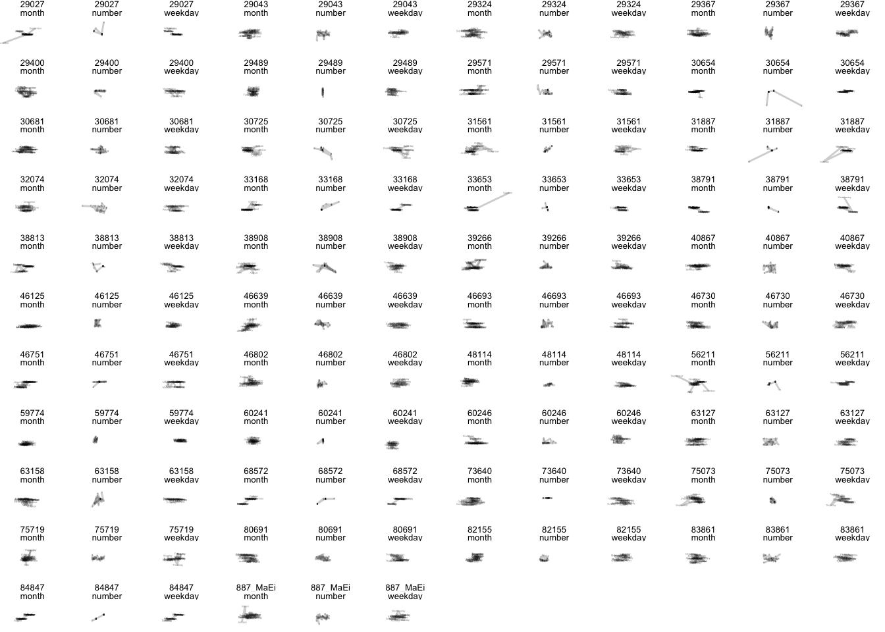
ds %>%
filter(ID %in% ID_CtlPass5Test) %>%
group_by(stimulus) %>%
arrange(stimulus) %>%
arrange(ordered(stimulus, levels = c("Monday", "Tuesday", "Wednesday", "Thursday", "Friday","Saturday","Sunday"))) %>% arrange(ordered(stimulus, levels = c("January", "February", "March", "April", "May","June","July","August","September","October","November","December"))) %>% # Start ggplot
ggplot(aes(x = x_zs, y = y_zs, group = stimulus, label = stimulus, fill = stimulus)) +
# geom_text(aes(x = X_mean_zs+0.1, y = Y_mean_zs+0.1), colour = "black", size = 0.5) +
# geom_path(aes(x = X_mean_zs, y = Y_mean_zs, group = 1)) +
geom_path(aes(x = x_zs, y = y_zs, group = repetition), alpha = 0.2) +
geom_text(aes(x = x_zs+0.1, y = y_zs+0.1), size = 0.5, alpha = 0.5) +
facet_wrap(ID ~ Cond) +
theme_void() +
theme(strip.text = element_text(size = 5))
# row1 <- ds_Q %>%
# filter(ID %in% ID_SynFail5Test) %>%
# select(starts_with("Q")) %>%
# summarise(across(everything(), mean, na.rm=TRUE))
#
# row2 <- ds_Q %>%
# filter(group %in% "Syn") %>%
# select(starts_with("Q")) %>%
# summarise(across(everything(), mean, na.rm=TRUE))
#
# bind_rows(row1,row2)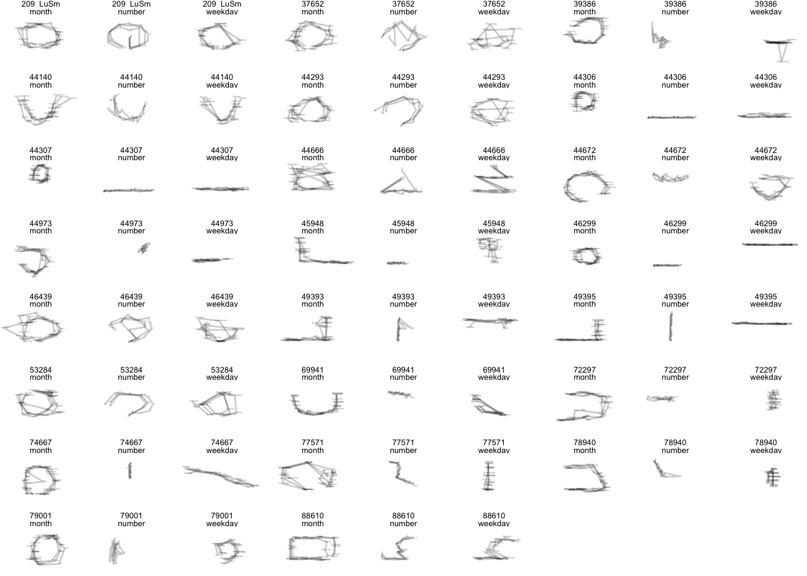